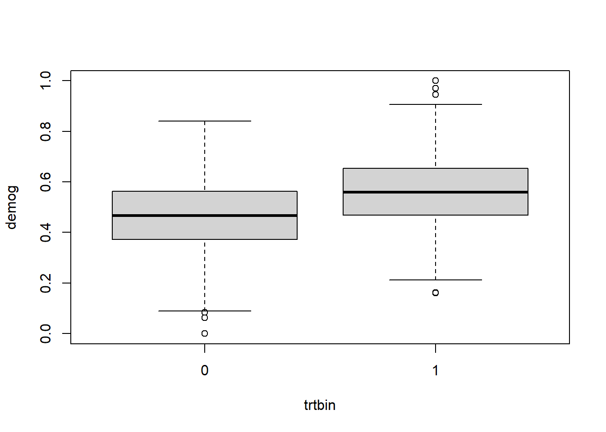
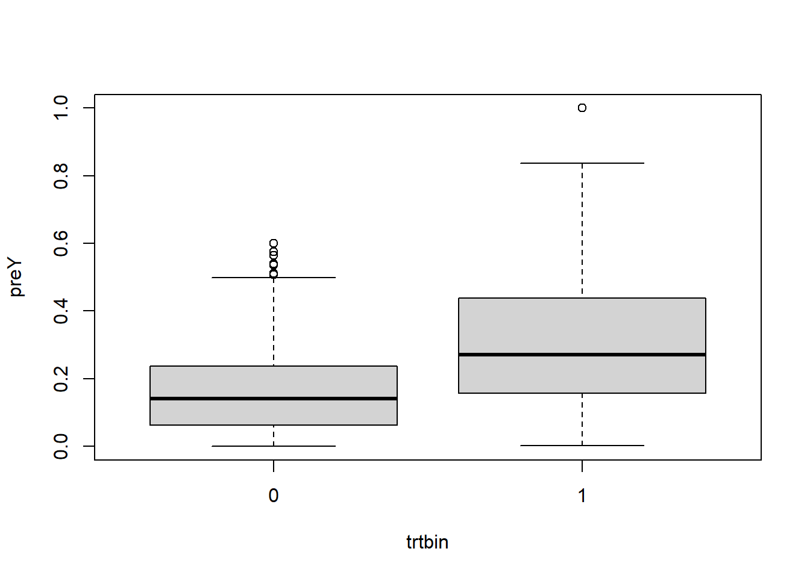
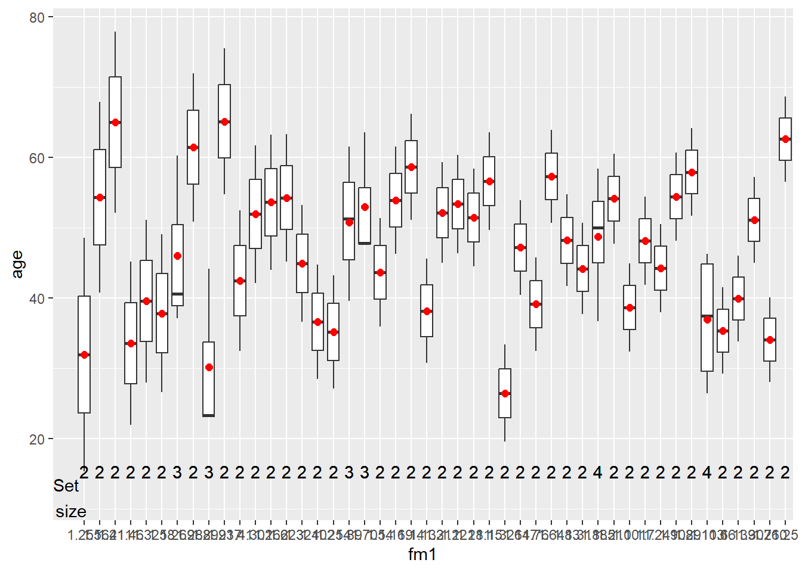
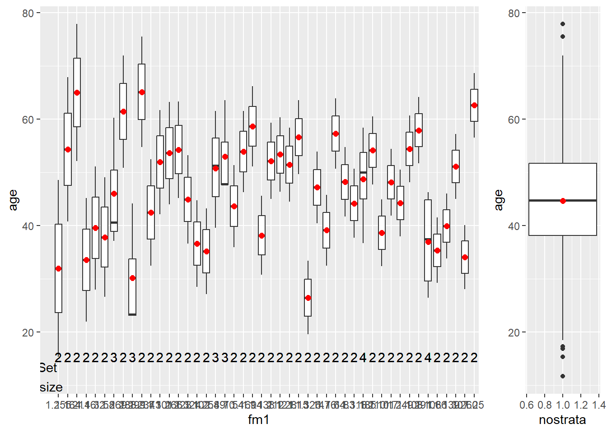

<!DOCTYPE html>
<html xmlns="http://www.w3.org/1999/xhtml" lang="en" xml:lang="en"><head>

<meta charset="utf-8">
<meta name="generator" content="quarto-1.3.433">

<meta name="viewport" content="width=device-width, initial-scale=1.0, user-scalable=yes">


<title>OES Matching Guide</title>
<style>
code{white-space: pre-wrap;}
span.smallcaps{font-variant: small-caps;}
div.columns{display: flex; gap: min(4vw, 1.5em);}
div.column{flex: auto; overflow-x: auto;}
div.hanging-indent{margin-left: 1.5em; text-indent: -1.5em;}
ul.task-list{list-style: none;}
ul.task-list li input[type="checkbox"] {
  width: 0.8em;
  margin: 0 0.8em 0.2em -1em; /* quarto-specific, see https://github.com/quarto-dev/quarto-cli/issues/4556 */ 
  vertical-align: middle;
}
/* CSS for syntax highlighting */
pre > code.sourceCode { white-space: pre; position: relative; }
pre > code.sourceCode > span { display: inline-block; line-height: 1.25; }
pre > code.sourceCode > span:empty { height: 1.2em; }
.sourceCode { overflow: visible; }
code.sourceCode > span { color: inherit; text-decoration: inherit; }
div.sourceCode { margin: 1em 0; }
pre.sourceCode { margin: 0; }
@media screen {
div.sourceCode { overflow: auto; }
}
@media print {
pre > code.sourceCode { white-space: pre-wrap; }
pre > code.sourceCode > span { text-indent: -5em; padding-left: 5em; }
}
pre.numberSource code
  { counter-reset: source-line 0; }
pre.numberSource code > span
  { position: relative; left: -4em; counter-increment: source-line; }
pre.numberSource code > span > a:first-child::before
  { content: counter(source-line);
    position: relative; left: -1em; text-align: right; vertical-align: baseline;
    border: none; display: inline-block;
    -webkit-touch-callout: none; -webkit-user-select: none;
    -khtml-user-select: none; -moz-user-select: none;
    -ms-user-select: none; user-select: none;
    padding: 0 4px; width: 4em;
  }
pre.numberSource { margin-left: 3em;  padding-left: 4px; }
div.sourceCode
  {   }
@media screen {
pre > code.sourceCode > span > a:first-child::before { text-decoration: underline; }
}
</style>


<script src="oes-matching-guide_files/libs/clipboard/clipboard.min.js"></script>
<script src="oes-matching-guide_files/libs/quarto-html/quarto.js"></script>
<script src="oes-matching-guide_files/libs/quarto-html/popper.min.js"></script>
<script src="oes-matching-guide_files/libs/quarto-html/tippy.umd.min.js"></script>
<script src="oes-matching-guide_files/libs/quarto-html/anchor.min.js"></script>
<link href="oes-matching-guide_files/libs/quarto-html/tippy.css" rel="stylesheet">
<link href="oes-matching-guide_files/libs/quarto-html/quarto-syntax-highlighting.css" rel="stylesheet" id="quarto-text-highlighting-styles">
<script src="oes-matching-guide_files/libs/bootstrap/bootstrap.min.js"></script>
<link href="oes-matching-guide_files/libs/bootstrap/bootstrap-icons.css" rel="stylesheet">
<link href="oes-matching-guide_files/libs/bootstrap/bootstrap.min.css" rel="stylesheet" id="quarto-bootstrap" data-mode="light">


</head>

<body class="fullcontent">

<div id="quarto-content" class="page-columns page-rows-contents page-layout-article">

<main class="content" id="quarto-document-content">

<header id="title-block-header" class="quarto-title-block default">
<div class="quarto-title">
<h1 class="title">OES Matching Guide</h1>
</div>


<div class="quarto-title-meta">

    
  
    
  </div>
  

</header>

<div class="cell">
<div class="sourceCode cell-code" id="cb1"><pre class="sourceCode r code-with-copy"><code class="sourceCode r"><span id="cb1-1"><a href="#cb1-1" aria-hidden="true" tabindex="-1"></a><span class="co"># install.packages("groundhog")</span></span>
<span id="cb1-2"><a href="#cb1-2" aria-hidden="true" tabindex="-1"></a><span class="fu">library</span>(<span class="st">"groundhog"</span>)</span></code><button title="Copy to Clipboard" class="code-copy-button"><i class="bi"></i></button></pre></div>
<div class="cell-output cell-output-stderr">
<pre><code>Attached: 'Groundhog' (Version: 3.1.2)</code></pre>
</div>
<div class="cell-output cell-output-stderr">
<pre><code>Tips and troubleshooting: https://groundhogR.com</code></pre>
</div>
<div class="sourceCode cell-code" id="cb4"><pre class="sourceCode r code-with-copy"><code class="sourceCode r"><span id="cb4-1"><a href="#cb4-1" aria-hidden="true" tabindex="-1"></a>pkgs <span class="ot">&lt;-</span> <span class="fu">c</span>(</span>
<span id="cb4-2"><a href="#cb4-2" aria-hidden="true" tabindex="-1"></a>  <span class="st">"tidyverse"</span>, <span class="st">"RItools"</span>, <span class="st">"optmatch"</span>, <span class="st">"designmatch"</span>, <span class="st">"highs"</span>, <span class="st">"senstrat"</span>,</span>
<span id="cb4-3"><a href="#cb4-3" aria-hidden="true" tabindex="-1"></a>  <span class="st">"sensemakr"</span>, <span class="st">"estimatr"</span>, <span class="st">"conflicted"</span>,</span>
<span id="cb4-4"><a href="#cb4-4" aria-hidden="true" tabindex="-1"></a>  <span class="st">"broom"</span>,</span>
<span id="cb4-5"><a href="#cb4-5" aria-hidden="true" tabindex="-1"></a>  <span class="st">"gtsummary"</span></span>
<span id="cb4-6"><a href="#cb4-6" aria-hidden="true" tabindex="-1"></a>)</span>
<span id="cb4-7"><a href="#cb4-7" aria-hidden="true" tabindex="-1"></a></span>
<span id="cb4-8"><a href="#cb4-8" aria-hidden="true" tabindex="-1"></a></span>
<span id="cb4-9"><a href="#cb4-9" aria-hidden="true" tabindex="-1"></a>conflicted<span class="sc">::</span><span class="fu">conflicts_prefer</span>(dplyr<span class="sc">::</span>select)</span></code><button title="Copy to Clipboard" class="code-copy-button"><i class="bi"></i></button></pre></div>
<div class="cell-output cell-output-stderr">
<pre><code>[conflicted] Will prefer dplyr::select over any other package.</code></pre>
</div>
<div class="sourceCode cell-code" id="cb6"><pre class="sourceCode r code-with-copy"><code class="sourceCode r"><span id="cb6-1"><a href="#cb6-1" aria-hidden="true" tabindex="-1"></a>conflicted<span class="sc">::</span><span class="fu">conflicts_prefer</span>(dplyr<span class="sc">::</span>filter)</span></code><button title="Copy to Clipboard" class="code-copy-button"><i class="bi"></i></button></pre></div>
<div class="cell-output cell-output-stderr">
<pre><code>[conflicted] Will prefer dplyr::filter over any other package.</code></pre>
</div>
<div class="sourceCode cell-code" id="cb8"><pre class="sourceCode r code-with-copy"><code class="sourceCode r"><span id="cb8-1"><a href="#cb8-1" aria-hidden="true" tabindex="-1"></a><span class="fu">groundhog.library</span>(pkgs, <span class="st">"2023-12-1"</span>)</span></code><button title="Copy to Clipboard" class="code-copy-button"><i class="bi"></i></button></pre></div>
<div class="cell-output cell-output-stderr">
<pre><code>── Attaching core tidyverse packages ──────────────────────── tidyverse 2.0.0 ──
✔ dplyr     1.1.4     ✔ readr     2.1.4
✔ forcats   1.0.0     ✔ stringr   1.5.1
✔ ggplot2   3.4.4     ✔ tibble    3.2.1
✔ lubridate 1.9.3     ✔ tidyr     1.3.0
✔ purrr     1.0.2     </code></pre>
</div>
<div class="cell-output cell-output-stderr">
<pre><code>── Conflicts ────────────────────────────────────────── tidyverse_conflicts() ──
✖ dplyr::filter() masks stats::filter()
✖ dplyr::lag()    masks stats::lag()
ℹ Use the conflicted package (&lt;http://conflicted.r-lib.org/&gt;) to force all conflicts to become errors
Loading required package: lattice

Loading required package: MASS


Attaching package: 'MASS'


The following object is masked from 'package:dplyr':

    select


Loading required package: slam

Loading required package: highs


Thank you for using our package! To acknowledge our work, please cite the package as: 


 Zubizarreta, Jose R., Kilcioglu, Cinar, Vielma, Juan P., and Cohn, Eric R. (2023). designmatch: Matched Samples that are Balanced and Representative by Design.

 R package version 0.5.2. https://cran.r-project.org/web/packages/designmatch/ 


See details in:

Carlos Cinelli and Chad Hazlett (2020). Making Sense of Sensitivity: Extending Omitted Variable Bias. Journal of the Royal Statistical Society, Series B (Statistical Methodology).


Attaching package: 'gtsummary'


The following object is masked from 'package:MASS':

    select


Successfully attached 'tidyverse_2.0.0'

Successfully attached 'RItools_0.3-3'

Successfully attached 'optmatch_0.10.7'

Successfully attached 'designmatch_0.5.4'

Successfully attached 'highs_0.1-10'

Successfully attached 'senstrat_1.0.3'

Successfully attached 'sensemakr_0.1.4'

Successfully attached 'estimatr_1.0.0'

Successfully attached 'conflicted_1.2.0'

Successfully attached 'broom_1.0.5'

Successfully attached 'gtsummary_1.7.2'</code></pre>
</div>
</div>
<section id="overview" class="level1">
<h1>Overview</h1>
</section>
<section id="create-data" class="level1">
<h1>Create Data</h1>
<p>To make this guide portable, we are making up a fake dataset.</p>
<p>In this guide, we will use the following variables for treatment and outcome:</p>
<ul>
<li><p><code>trtbin</code>: the binary version of a treatment, that is, you receive the treatment or do not</p></li>
<li><p><code>trtcont</code>: the continuous versions of a treatment</p></li>
<li><p><code>postY</code>: some outcome measured after treatment</p></li>
</ul>
<div class="cell">
<div class="sourceCode cell-code" id="cb11"><pre class="sourceCode r code-with-copy"><code class="sourceCode r"><span id="cb11-1"><a href="#cb11-1" aria-hidden="true" tabindex="-1"></a>N <span class="ot">&lt;-</span> <span class="dv">1000</span></span>
<span id="cb11-2"><a href="#cb11-2" aria-hidden="true" tabindex="-1"></a></span>
<span id="cb11-3"><a href="#cb11-3" aria-hidden="true" tabindex="-1"></a><span class="fu">set.seed</span>(<span class="dv">12345</span>)</span>
<span id="cb11-4"><a href="#cb11-4" aria-hidden="true" tabindex="-1"></a>dat <span class="ot">&lt;-</span> <span class="fu">data.frame</span>(<span class="at">id =</span> <span class="dv">1</span><span class="sc">:</span>N) </span>
<span id="cb11-5"><a href="#cb11-5" aria-hidden="true" tabindex="-1"></a>dat <span class="ot">&lt;-</span> dat <span class="sc">%&gt;%</span> <span class="fu">mutate</span>(</span>
<span id="cb11-6"><a href="#cb11-6" aria-hidden="true" tabindex="-1"></a>  <span class="at">sso =</span> <span class="fu">sample</span>(<span class="dv">1</span><span class="sc">:</span><span class="dv">10</span>, <span class="at">size =</span> N, <span class="at">replace =</span> <span class="cn">TRUE</span>),</span>
<span id="cb11-7"><a href="#cb11-7" aria-hidden="true" tabindex="-1"></a>  <span class="at">age =</span> <span class="fu">rnorm</span>(<span class="at">n =</span> N, <span class="at">mean =</span> <span class="dv">45</span>, <span class="at">sd =</span> <span class="dv">10</span>),</span>
<span id="cb11-8"><a href="#cb11-8" aria-hidden="true" tabindex="-1"></a>  <span class="at">sex =</span> <span class="fu">factor</span>(<span class="fu">sample</span>(<span class="fu">c</span>(<span class="st">"M"</span>, <span class="st">"F"</span>), <span class="at">size =</span> N, <span class="at">replace =</span> <span class="cn">TRUE</span>)),</span>
<span id="cb11-9"><a href="#cb11-9" aria-hidden="true" tabindex="-1"></a>  <span class="at">race =</span> <span class="fu">factor</span>(<span class="fu">sample</span>(<span class="fu">c</span>(<span class="st">"A"</span>, <span class="st">"B"</span>, <span class="st">"W"</span>), <span class="at">size =</span> N, <span class="at">replace =</span> <span class="cn">TRUE</span>, <span class="at">prob =</span> <span class="fu">c</span>(.<span class="dv">05</span>, .<span class="dv">15</span>, .<span class="dv">8</span>))),</span>
<span id="cb11-10"><a href="#cb11-10" aria-hidden="true" tabindex="-1"></a>  <span class="at">u =</span> <span class="fu">rnorm</span>(<span class="at">n =</span> N, <span class="at">mean =</span> sso, <span class="at">sd =</span> <span class="fu">exp</span>(sso)),</span>
<span id="cb11-11"><a href="#cb11-11" aria-hidden="true" tabindex="-1"></a>  <span class="at">demog_latent0 =</span> .<span class="dv">5</span> <span class="sc">*</span> <span class="fu">sd</span>(u) <span class="sc">*</span> age <span class="sc">+</span> .<span class="dv">2</span> <span class="sc">*</span> <span class="fu">sd</span>(u) <span class="sc">*</span> <span class="fu">as.numeric</span>(sex) <span class="sc">+</span> .<span class="dv">2</span> <span class="sc">*</span> <span class="fu">sd</span>(u) <span class="sc">*</span> <span class="fu">as.numeric</span>(race) <span class="sc">+</span> u,</span>
<span id="cb11-12"><a href="#cb11-12" aria-hidden="true" tabindex="-1"></a>  <span class="at">demog =</span> (demog_latent0 <span class="sc">-</span> <span class="fu">min</span>(demog_latent0)) <span class="sc">/</span> (<span class="fu">max</span>(demog_latent0) <span class="sc">-</span> <span class="fu">min</span>(demog_latent0)),</span>
<span id="cb11-13"><a href="#cb11-13" aria-hidden="true" tabindex="-1"></a>  <span class="at">edu =</span> <span class="fu">factor</span>(<span class="fu">sample</span>(letters[<span class="dv">1</span><span class="sc">:</span><span class="dv">8</span>], <span class="at">size =</span> N, <span class="at">prob =</span> <span class="fu">runif</span>(<span class="at">n =</span> <span class="dv">8</span>, <span class="at">min =</span> .<span class="dv">1</span>, <span class="at">max =</span> <span class="fu">pmax</span>(.<span class="dv">2</span>, demog)), <span class="at">replace =</span> <span class="cn">TRUE</span>)),</span>
<span id="cb11-14"><a href="#cb11-14" aria-hidden="true" tabindex="-1"></a>  <span class="at">grade =</span> <span class="fu">sample</span>(<span class="dv">1</span><span class="sc">:</span><span class="dv">6</span>, <span class="at">size =</span> N, <span class="at">replace =</span> <span class="cn">TRUE</span>),</span>
<span id="cb11-15"><a href="#cb11-15" aria-hidden="true" tabindex="-1"></a>  <span class="at">pay =</span> <span class="fu">abs</span>(<span class="fu">rnorm</span>(<span class="at">n =</span> N, <span class="at">mean =</span> (demog <span class="sc">+</span> .<span class="dv">01</span>) <span class="sc">*</span> <span class="dv">50000</span> <span class="sc">+</span> <span class="dv">50000</span>, <span class="at">sd =</span> <span class="dv">50000</span>)),</span>
<span id="cb11-16"><a href="#cb11-16" aria-hidden="true" tabindex="-1"></a>  <span class="at">tenure =</span> <span class="fu">rnorm</span>(<span class="at">n =</span> N, <span class="at">mean =</span> <span class="dv">10</span>, <span class="at">sd =</span> <span class="dv">3</span>),</span>
<span id="cb11-17"><a href="#cb11-17" aria-hidden="true" tabindex="-1"></a>  <span class="at">perf =</span> <span class="fu">runif</span>(<span class="at">n =</span> N, <span class="at">min =</span> <span class="dv">1</span>, <span class="at">max =</span> <span class="dv">10</span>),</span>
<span id="cb11-18"><a href="#cb11-18" aria-hidden="true" tabindex="-1"></a>  <span class="at">preY0 =</span> <span class="fu">abs</span>(.<span class="dv">2</span> <span class="sc">*</span> demog <span class="sc">+</span> <span class="fu">rnorm</span>(N)),</span>
<span id="cb11-19"><a href="#cb11-19" aria-hidden="true" tabindex="-1"></a>  <span class="at">preY =</span> (preY0 <span class="sc">-</span> <span class="fu">min</span>(preY0)) <span class="sc">/</span> (<span class="fu">max</span>(preY0) <span class="sc">-</span> <span class="fu">min</span>(preY0)),</span>
<span id="cb11-20"><a href="#cb11-20" aria-hidden="true" tabindex="-1"></a>  <span class="at">trtcont =</span> <span class="fu">rnorm</span>(<span class="at">n =</span> N, <span class="at">mean =</span> demog <span class="sc">+</span> preY, <span class="at">sd =</span> <span class="fu">sd</span>(demog <span class="sc">+</span> preY)),</span>
<span id="cb11-21"><a href="#cb11-21" aria-hidden="true" tabindex="-1"></a>  <span class="do">##  trtbin = rbinom(n = N, size = 1, prob = pmin(.95,demog+preY)),</span></span>
<span id="cb11-22"><a href="#cb11-22" aria-hidden="true" tabindex="-1"></a>  <span class="at">trtbin =</span> <span class="fu">as.numeric</span>(trtcont <span class="sc">&gt;=</span> <span class="fu">quantile</span>(trtcont, <span class="dv">2</span> <span class="sc">/</span> <span class="dv">3</span>)),</span>
<span id="cb11-23"><a href="#cb11-23" aria-hidden="true" tabindex="-1"></a>  <span class="at">postY =</span> .<span class="dv">2</span> <span class="sc">*</span> <span class="fu">sd</span>(preY) <span class="sc">*</span> trtbin <span class="sc">+</span> preY <span class="sc">+</span> <span class="fu">rnorm</span>(N)</span>
<span id="cb11-24"><a href="#cb11-24" aria-hidden="true" tabindex="-1"></a>)</span></code><button title="Copy to Clipboard" class="code-copy-button"><i class="bi"></i></button></pre></div>
</div>
<div class="cell">
<div class="sourceCode cell-code" id="cb12"><pre class="sourceCode r code-with-copy"><code class="sourceCode r"><span id="cb12-1"><a href="#cb12-1" aria-hidden="true" tabindex="-1"></a><span class="do">## optmatch will need row names</span></span>
<span id="cb12-2"><a href="#cb12-2" aria-hidden="true" tabindex="-1"></a><span class="fu">row.names</span>(dat) <span class="ot">&lt;-</span> dat<span class="sc">$</span>id</span>
<span id="cb12-3"><a href="#cb12-3" aria-hidden="true" tabindex="-1"></a><span class="do">## Just verifying that trtbin is related to demog and preY</span></span>
<span id="cb12-4"><a href="#cb12-4" aria-hidden="true" tabindex="-1"></a><span class="fu">table</span>(dat<span class="sc">$</span>trtbin, <span class="at">exclude =</span> <span class="fu">c</span>())</span></code><button title="Copy to Clipboard" class="code-copy-button"><i class="bi"></i></button></pre></div>
<div class="cell-output cell-output-stdout">
<pre><code>
  0   1 
666 334 </code></pre>
</div>
<div class="sourceCode cell-code" id="cb14"><pre class="sourceCode r code-with-copy"><code class="sourceCode r"><span id="cb14-1"><a href="#cb14-1" aria-hidden="true" tabindex="-1"></a><span class="fu">with</span>(dat, <span class="fu">boxplot</span>(demog <span class="sc">~</span> trtbin))</span></code><button title="Copy to Clipboard" class="code-copy-button"><i class="bi"></i></button></pre></div>
<div class="cell-output-display">
<p></p>
</div>
<div class="sourceCode cell-code" id="cb15"><pre class="sourceCode r code-with-copy"><code class="sourceCode r"><span id="cb15-1"><a href="#cb15-1" aria-hidden="true" tabindex="-1"></a><span class="fu">with</span>(dat, <span class="fu">boxplot</span>(preY <span class="sc">~</span> trtbin))</span></code><button title="Copy to Clipboard" class="code-copy-button"><i class="bi"></i></button></pre></div>
<div class="cell-output-display">
<p></p>
</div>
<div class="sourceCode cell-code" id="cb16"><pre class="sourceCode r code-with-copy"><code class="sourceCode r"><span id="cb16-1"><a href="#cb16-1" aria-hidden="true" tabindex="-1"></a><span class="do">## Check the relationship between demog and its components. Not really using demog directly below.</span></span>
<span id="cb16-2"><a href="#cb16-2" aria-hidden="true" tabindex="-1"></a><span class="do">## The idea is to ensure some relationships among the covariates using demog.</span></span>
<span id="cb16-3"><a href="#cb16-3" aria-hidden="true" tabindex="-1"></a>lm1 <span class="ot">&lt;-</span> <span class="fu">lm</span>(demog <span class="sc">~</span> sso <span class="sc">+</span> age <span class="sc">+</span> sex <span class="sc">+</span> race <span class="sc">+</span> edu, <span class="at">data =</span> dat)</span>
<span id="cb16-4"><a href="#cb16-4" aria-hidden="true" tabindex="-1"></a><span class="fu">summary</span>(lm1)</span></code><button title="Copy to Clipboard" class="code-copy-button"><i class="bi"></i></button></pre></div>
<div class="cell-output cell-output-stdout">
<pre><code>
Call:
lm(formula = demog ~ sso + age + sex + race + edu, data = dat)

Residuals:
      Min        1Q    Median        3Q       Max 
-0.202666 -0.002688  0.000133  0.002440  0.184421 

Coefficients:
              Estimate Std. Error t value Pr(&gt;|t|)    
(Intercept) -1.710e-01  6.575e-03 -26.012  &lt; 2e-16 ***
sso          3.279e-04  3.239e-04   1.012  0.31157    
age          1.450e-02  9.352e-05 155.009  &lt; 2e-16 ***
sexM         7.778e-03  1.861e-03   4.180 3.17e-05 ***
raceB        4.643e-03  5.170e-03   0.898  0.36935    
raceW        1.271e-02  4.672e-03   2.720  0.00664 ** 
edub         4.261e-03  2.970e-03   1.435  0.15166    
educ         2.423e-03  3.134e-03   0.773  0.43975    
edud        -9.024e-04  5.479e-03  -0.165  0.86922    
edue         7.035e-04  3.055e-03   0.230  0.81793    
eduf         7.657e-04  3.418e-03   0.224  0.82276    
edug         2.459e-03  4.542e-03   0.541  0.58831    
eduh         2.109e-03  3.413e-03   0.618  0.53673    
---
Signif. codes:  0 '***' 0.001 '**' 0.01 '*' 0.05 '.' 0.1 ' ' 1

Residual standard error: 0.02913 on 987 degrees of freedom
Multiple R-squared:  0.961, Adjusted R-squared:  0.9605 
F-statistic:  2027 on 12 and 987 DF,  p-value: &lt; 2.2e-16</code></pre>
</div>
<div class="sourceCode cell-code" id="cb18"><pre class="sourceCode r code-with-copy"><code class="sourceCode r"><span id="cb18-1"><a href="#cb18-1" aria-hidden="true" tabindex="-1"></a>lm2 <span class="ot">&lt;-</span> <span class="fu">lm</span>(preY <span class="sc">~</span> demog, <span class="at">data =</span> dat)</span>
<span id="cb18-2"><a href="#cb18-2" aria-hidden="true" tabindex="-1"></a><span class="fu">summary</span>(lm2)</span></code><button title="Copy to Clipboard" class="code-copy-button"><i class="bi"></i></button></pre></div>
<div class="cell-output cell-output-stdout">
<pre><code>
Call:
lm(formula = preY ~ demog, data = dat)

Residuals:
     Min       1Q   Median       3Q      Max 
-0.22344 -0.12928 -0.03801  0.08491  0.79119 

Coefficients:
            Estimate Std. Error t value Pr(&gt;|t|)    
(Intercept)  0.25110    0.01830   13.72   &lt;2e-16 ***
demog       -0.08368    0.03545   -2.36   0.0185 *  
---
Signif. codes:  0 '***' 0.001 '**' 0.01 '*' 0.05 '.' 0.1 ' ' 1

Residual standard error: 0.1643 on 998 degrees of freedom
Multiple R-squared:  0.005551,  Adjusted R-squared:  0.004554 
F-statistic: 5.571 on 1 and 998 DF,  p-value: 0.01846</code></pre>
</div>
<div class="sourceCode cell-code" id="cb20"><pre class="sourceCode r code-with-copy"><code class="sourceCode r"><span id="cb20-1"><a href="#cb20-1" aria-hidden="true" tabindex="-1"></a><span class="fu">cor</span>(dat[, <span class="fu">c</span>(<span class="st">"age"</span>, <span class="st">"demog"</span>, <span class="st">"pay"</span>, <span class="st">"preY"</span>)])</span></code><button title="Copy to Clipboard" class="code-copy-button"><i class="bi"></i></button></pre></div>
<div class="cell-output cell-output-stdout">
<pre><code>              age      demog           pay          preY
age    1.00000000  0.9795826  0.1433944279 -0.0694077270
demog  0.97958262  1.0000000  0.1499532189 -0.0745039006
pay    0.14339443  0.1499532  1.0000000000 -0.0005820522
preY  -0.06940773 -0.0745039 -0.0005820522  1.0000000000</code></pre>
</div>
</div>
</section>
<section id="decide-on-elements-of-the-design" class="level1">
<h1>Decide on elements of the design</h1>
<p>Our goal is to assess the effect of some observed intervention. We worry that a naive description of the relationship between intervention and outcome would not provide useful policy guidance because any such simple two-way relationship might contain other relationships (say, those driven by age or education). From a policy stand point we can change the intervention but we cannot change the education or age of people, so we want to remove the influence of age and education (among other relatively fixed characteristics of people) from our description. That is, we want to be able to <strong>interpret</strong> the relationship we calculate between intervention and outcome as reflecting, as much as possible, only the intervention and the outcome and not age and education.<a href="#fn1" class="footnote-ref" id="fnref1" role="doc-noteref"><sup>1</sup></a></p>
<p>Say that we want to remove the effect of sex from the relationship between the intervention and the outcome. Many of us learn that we may account for this by simply adding this variable to the right hand side of the model along with the treatment. However, this structure would only account for the linear effect of that covariate on the outcome. What if the effect is not linear? What if it is quadratic or cubic? What if there is some interactive between the intervention and the covariate?</p>
<p>Perhaps, the simplest and most transparent way to account for the effect of a covariate like sex would be to calculate the relationship between the intervention and the outcome only among men and only among women (assuming our administrative data do not yet record non-binary genders). That is we will <strong>stratify</strong> by the sex to evaluate the effect of the binary treatment on the outcome.</p>
<p>Below we show this most basic approach to using stratification to remove or control for the effects of a single variable with two levels. We do this to lead the way to multivariate optimal matching later. What we see here is that the effect among men is different from the effect among women, and that the effect among each sex cannot be confounded by sex; afterall the variables <code>sex</code> is held perfectly constant. We also include an example of including the linear effect of sex as a point of comparison.</p>
<div class="cell">
<div class="sourceCode cell-code" id="cb22"><pre class="sourceCode r code-with-copy"><code class="sourceCode r"><span id="cb22-1"><a href="#cb22-1" aria-hidden="true" tabindex="-1"></a><span class="fu">with</span>(dat, <span class="fu">table</span>(trtbin, sex, <span class="at">exclude =</span> <span class="fu">c</span>())) <span class="sc">%&gt;%</span> </span>
<span id="cb22-2"><a href="#cb22-2" aria-hidden="true" tabindex="-1"></a>  knitr<span class="sc">::</span><span class="fu">kable</span>()</span></code><button title="Copy to Clipboard" class="code-copy-button"><i class="bi"></i></button></pre></div>
<div class="cell-output-display">
<div id="tbl-treatment-sex" class="anchored">
<table class="table table-sm table-striped small">
<caption>Table&nbsp;1: Treatment and sex counts</caption>
<thead>
<tr class="header">
<th style="text-align: left;"></th>
<th style="text-align: right;">F</th>
<th style="text-align: right;">M</th>
</tr>
</thead>
<tbody>
<tr class="odd">
<td style="text-align: left;">0</td>
<td style="text-align: right;">327</td>
<td style="text-align: right;">339</td>
</tr>
<tr class="even">
<td style="text-align: left;">1</td>
<td style="text-align: right;">169</td>
<td style="text-align: right;">165</td>
</tr>
</tbody>
</table>
</div>
</div>
</div>
<div class="cell">
<div class="sourceCode cell-code" id="cb23"><pre class="sourceCode r code-with-copy"><code class="sourceCode r"><span id="cb23-1"><a href="#cb23-1" aria-hidden="true" tabindex="-1"></a>lm_sexM <span class="ot">&lt;-</span> <span class="fu">lm</span>(postY <span class="sc">~</span> trtbin, <span class="at">data =</span> dat, <span class="at">subset =</span> sex <span class="sc">==</span> <span class="st">"M"</span>)</span>
<span id="cb23-2"><a href="#cb23-2" aria-hidden="true" tabindex="-1"></a>lm_sexF <span class="ot">&lt;-</span> <span class="fu">lm</span>(postY <span class="sc">~</span> trtbin, <span class="at">data =</span> dat, <span class="at">subset =</span> sex <span class="sc">==</span> <span class="st">"F"</span>)</span>
<span id="cb23-3"><a href="#cb23-3" aria-hidden="true" tabindex="-1"></a>lm_sexl <span class="ot">&lt;-</span> <span class="fu">lm</span>(postY <span class="sc">~</span> trtbin <span class="sc">+</span> sex, <span class="at">data =</span> dat)</span>
<span id="cb23-4"><a href="#cb23-4" aria-hidden="true" tabindex="-1"></a><span class="fu">coef</span>(lm_sexM)[[<span class="st">"trtbin"</span>]]</span></code><button title="Copy to Clipboard" class="code-copy-button"><i class="bi"></i></button></pre></div>
<div class="cell-output cell-output-stdout">
<pre><code>[1] 0.3205178</code></pre>
</div>
<div class="sourceCode cell-code" id="cb25"><pre class="sourceCode r code-with-copy"><code class="sourceCode r"><span id="cb25-1"><a href="#cb25-1" aria-hidden="true" tabindex="-1"></a><span class="fu">coef</span>(lm_sexF)[[<span class="st">"trtbin"</span>]]</span></code><button title="Copy to Clipboard" class="code-copy-button"><i class="bi"></i></button></pre></div>
<div class="cell-output cell-output-stdout">
<pre><code>[1] 0.2075592</code></pre>
</div>
<div class="sourceCode cell-code" id="cb27"><pre class="sourceCode r code-with-copy"><code class="sourceCode r"><span id="cb27-1"><a href="#cb27-1" aria-hidden="true" tabindex="-1"></a><span class="fu">coef</span>(lm_sexl)[[<span class="st">"trtbin"</span>]]</span></code><button title="Copy to Clipboard" class="code-copy-button"><i class="bi"></i></button></pre></div>
<div class="cell-output cell-output-stdout">
<pre><code>[1] 0.263928</code></pre>
</div>
<div class="sourceCode cell-code" id="cb29"><pre class="sourceCode r code-with-copy"><code class="sourceCode r"><span id="cb29-1"><a href="#cb29-1" aria-hidden="true" tabindex="-1"></a><span class="fu">bind_rows</span>(</span>
<span id="cb29-2"><a href="#cb29-2" aria-hidden="true" tabindex="-1"></a>  lm_sexM <span class="sc">%&gt;%</span> broom<span class="sc">::</span><span class="fu">tidy</span>() <span class="sc">%&gt;%</span> <span class="fu">mutate</span>(<span class="at">strata =</span> <span class="st">"M"</span>) <span class="sc">%&gt;%</span>  <span class="fu">select</span>(strata, <span class="fu">everything</span>()),</span>
<span id="cb29-3"><a href="#cb29-3" aria-hidden="true" tabindex="-1"></a>  lm_sexF <span class="sc">%&gt;%</span> broom<span class="sc">::</span><span class="fu">tidy</span>() <span class="sc">%&gt;%</span> <span class="fu">mutate</span>(<span class="at">strata =</span> <span class="st">"F"</span>) <span class="sc">%&gt;%</span>  <span class="fu">select</span>(strata, <span class="fu">everything</span>()),</span>
<span id="cb29-4"><a href="#cb29-4" aria-hidden="true" tabindex="-1"></a>  lm_sexl <span class="sc">%&gt;%</span> broom<span class="sc">::</span><span class="fu">tidy</span>() <span class="sc">%&gt;%</span> <span class="fu">mutate</span>(<span class="at">strata =</span> <span class="st">"Linear effect of sex"</span>) <span class="sc">%&gt;%</span>  <span class="fu">select</span>(strata, <span class="fu">everything</span>())</span>
<span id="cb29-5"><a href="#cb29-5" aria-hidden="true" tabindex="-1"></a>) <span class="sc">%&gt;%</span> <span class="fu">arrange</span>(<span class="fu">desc</span>(term), strata)</span></code><button title="Copy to Clipboard" class="code-copy-button"><i class="bi"></i></button></pre></div>
<div class="cell-output cell-output-stdout">
<pre><code># A tibble: 7 × 6
  strata               term        estimate std.error statistic   p.value
  &lt;chr&gt;                &lt;chr&gt;          &lt;dbl&gt;     &lt;dbl&gt;     &lt;dbl&gt;     &lt;dbl&gt;
1 F                    trtbin        0.208     0.0966     2.15  0.0322   
2 Linear effect of sex trtbin        0.264     0.0671     3.93  0.0000903
3 M                    trtbin        0.321     0.0933     3.44  0.000637 
4 Linear effect of sex sexM          0.0171    0.0633     0.270 0.788    
5 F                    (Intercept)   0.0863    0.0564     1.53  0.127    
6 Linear effect of sex (Intercept)   0.0671    0.0504     1.33  0.184    
7 M                    (Intercept)   0.0657    0.0534     1.23  0.219    </code></pre>
</div>
<div class="sourceCode cell-code" id="cb31"><pre class="sourceCode r code-with-copy"><code class="sourceCode r"><span id="cb31-1"><a href="#cb31-1" aria-hidden="true" tabindex="-1"></a>gt_lm_sexM <span class="ot">&lt;-</span> lm_sexM <span class="sc">%&gt;%</span> <span class="fu">tbl_regression</span>()</span>
<span id="cb31-2"><a href="#cb31-2" aria-hidden="true" tabindex="-1"></a>gt_lm_sexF <span class="ot">&lt;-</span> lm_sexF <span class="sc">%&gt;%</span> <span class="fu">tbl_regression</span>()</span>
<span id="cb31-3"><a href="#cb31-3" aria-hidden="true" tabindex="-1"></a>gt_lm_sexl <span class="ot">&lt;-</span> lm_sexl <span class="sc">%&gt;%</span> <span class="fu">tbl_regression</span>()</span>
<span id="cb31-4"><a href="#cb31-4" aria-hidden="true" tabindex="-1"></a><span class="fu">tbl_merge</span>(</span>
<span id="cb31-5"><a href="#cb31-5" aria-hidden="true" tabindex="-1"></a>    <span class="at">tbls =</span> <span class="fu">list</span>(gt_lm_sexM, gt_lm_sexF, gt_lm_sexl),</span>
<span id="cb31-6"><a href="#cb31-6" aria-hidden="true" tabindex="-1"></a>    <span class="at">tab_spanner =</span> <span class="fu">c</span>(<span class="st">"**Males**"</span>, <span class="st">"**Females**"</span>, <span class="st">"**Linear effect of sex**"</span>)</span>
<span id="cb31-7"><a href="#cb31-7" aria-hidden="true" tabindex="-1"></a>  )</span></code><button title="Copy to Clipboard" class="code-copy-button"><i class="bi"></i></button></pre></div>
<div class="cell-output-display">

<div id="jyaxpfaeyf" style="padding-left:0px;padding-right:0px;padding-top:10px;padding-bottom:10px;overflow-x:auto;overflow-y:auto;width:auto;height:auto;">
<style>#jyaxpfaeyf table {
  font-family: system-ui, 'Segoe UI', Roboto, Helvetica, Arial, sans-serif, 'Apple Color Emoji', 'Segoe UI Emoji', 'Segoe UI Symbol', 'Noto Color Emoji';
  -webkit-font-smoothing: antialiased;
  -moz-osx-font-smoothing: grayscale;
}

#jyaxpfaeyf thead, #jyaxpfaeyf tbody, #jyaxpfaeyf tfoot, #jyaxpfaeyf tr, #jyaxpfaeyf td, #jyaxpfaeyf th {
  border-style: none;
}

#jyaxpfaeyf p {
  margin: 0;
  padding: 0;
}

#jyaxpfaeyf .gt_table {
  display: table;
  border-collapse: collapse;
  line-height: normal;
  margin-left: auto;
  margin-right: auto;
  color: #333333;
  font-size: 16px;
  font-weight: normal;
  font-style: normal;
  background-color: #FFFFFF;
  width: auto;
  border-top-style: solid;
  border-top-width: 2px;
  border-top-color: #A8A8A8;
  border-right-style: none;
  border-right-width: 2px;
  border-right-color: #D3D3D3;
  border-bottom-style: solid;
  border-bottom-width: 2px;
  border-bottom-color: #A8A8A8;
  border-left-style: none;
  border-left-width: 2px;
  border-left-color: #D3D3D3;
}

#jyaxpfaeyf .gt_caption {
  padding-top: 4px;
  padding-bottom: 4px;
}

#jyaxpfaeyf .gt_title {
  color: #333333;
  font-size: 125%;
  font-weight: initial;
  padding-top: 4px;
  padding-bottom: 4px;
  padding-left: 5px;
  padding-right: 5px;
  border-bottom-color: #FFFFFF;
  border-bottom-width: 0;
}

#jyaxpfaeyf .gt_subtitle {
  color: #333333;
  font-size: 85%;
  font-weight: initial;
  padding-top: 3px;
  padding-bottom: 5px;
  padding-left: 5px;
  padding-right: 5px;
  border-top-color: #FFFFFF;
  border-top-width: 0;
}

#jyaxpfaeyf .gt_heading {
  background-color: #FFFFFF;
  text-align: center;
  border-bottom-color: #FFFFFF;
  border-left-style: none;
  border-left-width: 1px;
  border-left-color: #D3D3D3;
  border-right-style: none;
  border-right-width: 1px;
  border-right-color: #D3D3D3;
}

#jyaxpfaeyf .gt_bottom_border {
  border-bottom-style: solid;
  border-bottom-width: 2px;
  border-bottom-color: #D3D3D3;
}

#jyaxpfaeyf .gt_col_headings {
  border-top-style: solid;
  border-top-width: 2px;
  border-top-color: #D3D3D3;
  border-bottom-style: solid;
  border-bottom-width: 2px;
  border-bottom-color: #D3D3D3;
  border-left-style: none;
  border-left-width: 1px;
  border-left-color: #D3D3D3;
  border-right-style: none;
  border-right-width: 1px;
  border-right-color: #D3D3D3;
}

#jyaxpfaeyf .gt_col_heading {
  color: #333333;
  background-color: #FFFFFF;
  font-size: 100%;
  font-weight: normal;
  text-transform: inherit;
  border-left-style: none;
  border-left-width: 1px;
  border-left-color: #D3D3D3;
  border-right-style: none;
  border-right-width: 1px;
  border-right-color: #D3D3D3;
  vertical-align: bottom;
  padding-top: 5px;
  padding-bottom: 6px;
  padding-left: 5px;
  padding-right: 5px;
  overflow-x: hidden;
}

#jyaxpfaeyf .gt_column_spanner_outer {
  color: #333333;
  background-color: #FFFFFF;
  font-size: 100%;
  font-weight: normal;
  text-transform: inherit;
  padding-top: 0;
  padding-bottom: 0;
  padding-left: 4px;
  padding-right: 4px;
}

#jyaxpfaeyf .gt_column_spanner_outer:first-child {
  padding-left: 0;
}

#jyaxpfaeyf .gt_column_spanner_outer:last-child {
  padding-right: 0;
}

#jyaxpfaeyf .gt_column_spanner {
  border-bottom-style: solid;
  border-bottom-width: 2px;
  border-bottom-color: #D3D3D3;
  vertical-align: bottom;
  padding-top: 5px;
  padding-bottom: 5px;
  overflow-x: hidden;
  display: inline-block;
  width: 100%;
}

#jyaxpfaeyf .gt_spanner_row {
  border-bottom-style: hidden;
}

#jyaxpfaeyf .gt_group_heading {
  padding-top: 8px;
  padding-bottom: 8px;
  padding-left: 5px;
  padding-right: 5px;
  color: #333333;
  background-color: #FFFFFF;
  font-size: 100%;
  font-weight: initial;
  text-transform: inherit;
  border-top-style: solid;
  border-top-width: 2px;
  border-top-color: #D3D3D3;
  border-bottom-style: solid;
  border-bottom-width: 2px;
  border-bottom-color: #D3D3D3;
  border-left-style: none;
  border-left-width: 1px;
  border-left-color: #D3D3D3;
  border-right-style: none;
  border-right-width: 1px;
  border-right-color: #D3D3D3;
  vertical-align: middle;
  text-align: left;
}

#jyaxpfaeyf .gt_empty_group_heading {
  padding: 0.5px;
  color: #333333;
  background-color: #FFFFFF;
  font-size: 100%;
  font-weight: initial;
  border-top-style: solid;
  border-top-width: 2px;
  border-top-color: #D3D3D3;
  border-bottom-style: solid;
  border-bottom-width: 2px;
  border-bottom-color: #D3D3D3;
  vertical-align: middle;
}

#jyaxpfaeyf .gt_from_md > :first-child {
  margin-top: 0;
}

#jyaxpfaeyf .gt_from_md > :last-child {
  margin-bottom: 0;
}

#jyaxpfaeyf .gt_row {
  padding-top: 8px;
  padding-bottom: 8px;
  padding-left: 5px;
  padding-right: 5px;
  margin: 10px;
  border-top-style: solid;
  border-top-width: 1px;
  border-top-color: #D3D3D3;
  border-left-style: none;
  border-left-width: 1px;
  border-left-color: #D3D3D3;
  border-right-style: none;
  border-right-width: 1px;
  border-right-color: #D3D3D3;
  vertical-align: middle;
  overflow-x: hidden;
}

#jyaxpfaeyf .gt_stub {
  color: #333333;
  background-color: #FFFFFF;
  font-size: 100%;
  font-weight: initial;
  text-transform: inherit;
  border-right-style: solid;
  border-right-width: 2px;
  border-right-color: #D3D3D3;
  padding-left: 5px;
  padding-right: 5px;
}

#jyaxpfaeyf .gt_stub_row_group {
  color: #333333;
  background-color: #FFFFFF;
  font-size: 100%;
  font-weight: initial;
  text-transform: inherit;
  border-right-style: solid;
  border-right-width: 2px;
  border-right-color: #D3D3D3;
  padding-left: 5px;
  padding-right: 5px;
  vertical-align: top;
}

#jyaxpfaeyf .gt_row_group_first td {
  border-top-width: 2px;
}

#jyaxpfaeyf .gt_row_group_first th {
  border-top-width: 2px;
}

#jyaxpfaeyf .gt_summary_row {
  color: #333333;
  background-color: #FFFFFF;
  text-transform: inherit;
  padding-top: 8px;
  padding-bottom: 8px;
  padding-left: 5px;
  padding-right: 5px;
}

#jyaxpfaeyf .gt_first_summary_row {
  border-top-style: solid;
  border-top-color: #D3D3D3;
}

#jyaxpfaeyf .gt_first_summary_row.thick {
  border-top-width: 2px;
}

#jyaxpfaeyf .gt_last_summary_row {
  padding-top: 8px;
  padding-bottom: 8px;
  padding-left: 5px;
  padding-right: 5px;
  border-bottom-style: solid;
  border-bottom-width: 2px;
  border-bottom-color: #D3D3D3;
}

#jyaxpfaeyf .gt_grand_summary_row {
  color: #333333;
  background-color: #FFFFFF;
  text-transform: inherit;
  padding-top: 8px;
  padding-bottom: 8px;
  padding-left: 5px;
  padding-right: 5px;
}

#jyaxpfaeyf .gt_first_grand_summary_row {
  padding-top: 8px;
  padding-bottom: 8px;
  padding-left: 5px;
  padding-right: 5px;
  border-top-style: double;
  border-top-width: 6px;
  border-top-color: #D3D3D3;
}

#jyaxpfaeyf .gt_last_grand_summary_row_top {
  padding-top: 8px;
  padding-bottom: 8px;
  padding-left: 5px;
  padding-right: 5px;
  border-bottom-style: double;
  border-bottom-width: 6px;
  border-bottom-color: #D3D3D3;
}

#jyaxpfaeyf .gt_striped {
  background-color: rgba(128, 128, 128, 0.05);
}

#jyaxpfaeyf .gt_table_body {
  border-top-style: solid;
  border-top-width: 2px;
  border-top-color: #D3D3D3;
  border-bottom-style: solid;
  border-bottom-width: 2px;
  border-bottom-color: #D3D3D3;
}

#jyaxpfaeyf .gt_footnotes {
  color: #333333;
  background-color: #FFFFFF;
  border-bottom-style: none;
  border-bottom-width: 2px;
  border-bottom-color: #D3D3D3;
  border-left-style: none;
  border-left-width: 2px;
  border-left-color: #D3D3D3;
  border-right-style: none;
  border-right-width: 2px;
  border-right-color: #D3D3D3;
}

#jyaxpfaeyf .gt_footnote {
  margin: 0px;
  font-size: 90%;
  padding-top: 4px;
  padding-bottom: 4px;
  padding-left: 5px;
  padding-right: 5px;
}

#jyaxpfaeyf .gt_sourcenotes {
  color: #333333;
  background-color: #FFFFFF;
  border-bottom-style: none;
  border-bottom-width: 2px;
  border-bottom-color: #D3D3D3;
  border-left-style: none;
  border-left-width: 2px;
  border-left-color: #D3D3D3;
  border-right-style: none;
  border-right-width: 2px;
  border-right-color: #D3D3D3;
}

#jyaxpfaeyf .gt_sourcenote {
  font-size: 90%;
  padding-top: 4px;
  padding-bottom: 4px;
  padding-left: 5px;
  padding-right: 5px;
}

#jyaxpfaeyf .gt_left {
  text-align: left;
}

#jyaxpfaeyf .gt_center {
  text-align: center;
}

#jyaxpfaeyf .gt_right {
  text-align: right;
  font-variant-numeric: tabular-nums;
}

#jyaxpfaeyf .gt_font_normal {
  font-weight: normal;
}

#jyaxpfaeyf .gt_font_bold {
  font-weight: bold;
}

#jyaxpfaeyf .gt_font_italic {
  font-style: italic;
}

#jyaxpfaeyf .gt_super {
  font-size: 65%;
}

#jyaxpfaeyf .gt_footnote_marks {
  font-size: 75%;
  vertical-align: 0.4em;
  position: initial;
}

#jyaxpfaeyf .gt_asterisk {
  font-size: 100%;
  vertical-align: 0;
}

#jyaxpfaeyf .gt_indent_1 {
  text-indent: 5px;
}

#jyaxpfaeyf .gt_indent_2 {
  text-indent: 10px;
}

#jyaxpfaeyf .gt_indent_3 {
  text-indent: 15px;
}

#jyaxpfaeyf .gt_indent_4 {
  text-indent: 20px;
}

#jyaxpfaeyf .gt_indent_5 {
  text-indent: 25px;
}
</style>
<table class="gt_table" data-quarto-disable-processing="false" data-quarto-bootstrap="false">
  <thead>
    
    <tr class="gt_col_headings gt_spanner_row">
      <th class="gt_col_heading gt_columns_bottom_border gt_left" rowspan="2" colspan="1" scope="col" id="<strong>Characteristic</strong>"><strong>Characteristic</strong></th>
      <th class="gt_center gt_columns_top_border gt_column_spanner_outer" rowspan="1" colspan="3" scope="colgroup" id="<strong>Males</strong>">
        <span class="gt_column_spanner"><strong>Males</strong></span>
      </th>
      <th class="gt_center gt_columns_top_border gt_column_spanner_outer" rowspan="1" colspan="3" scope="colgroup" id="<strong>Females</strong>">
        <span class="gt_column_spanner"><strong>Females</strong></span>
      </th>
      <th class="gt_center gt_columns_top_border gt_column_spanner_outer" rowspan="1" colspan="3" scope="colgroup" id="<strong>Linear effect of sex</strong>">
        <span class="gt_column_spanner"><strong>Linear effect of sex</strong></span>
      </th>
    </tr>
    <tr class="gt_col_headings">
      <th class="gt_col_heading gt_columns_bottom_border gt_center" rowspan="1" colspan="1" scope="col" id="<strong>Beta</strong>"><strong>Beta</strong></th>
      <th class="gt_col_heading gt_columns_bottom_border gt_center" rowspan="1" colspan="1" scope="col" id="<strong>95% CI</strong><span class=&quot;gt_footnote_marks&quot; style=&quot;white-space:nowrap;font-style:italic;font-weight:normal;&quot;><sup>1</sup></span>"><strong>95% CI</strong><span class="gt_footnote_marks" style="white-space:nowrap;font-style:italic;font-weight:normal;"><sup>1</sup></span></th>
      <th class="gt_col_heading gt_columns_bottom_border gt_center" rowspan="1" colspan="1" scope="col" id="<strong>p-value</strong>"><strong>p-value</strong></th>
      <th class="gt_col_heading gt_columns_bottom_border gt_center" rowspan="1" colspan="1" scope="col" id="<strong>Beta</strong>"><strong>Beta</strong></th>
      <th class="gt_col_heading gt_columns_bottom_border gt_center" rowspan="1" colspan="1" scope="col" id="<strong>95% CI</strong><span class=&quot;gt_footnote_marks&quot; style=&quot;white-space:nowrap;font-style:italic;font-weight:normal;&quot;><sup>1</sup></span>"><strong>95% CI</strong><span class="gt_footnote_marks" style="white-space:nowrap;font-style:italic;font-weight:normal;"><sup>1</sup></span></th>
      <th class="gt_col_heading gt_columns_bottom_border gt_center" rowspan="1" colspan="1" scope="col" id="<strong>p-value</strong>"><strong>p-value</strong></th>
      <th class="gt_col_heading gt_columns_bottom_border gt_center" rowspan="1" colspan="1" scope="col" id="<strong>Beta</strong>"><strong>Beta</strong></th>
      <th class="gt_col_heading gt_columns_bottom_border gt_center" rowspan="1" colspan="1" scope="col" id="<strong>95% CI</strong><span class=&quot;gt_footnote_marks&quot; style=&quot;white-space:nowrap;font-style:italic;font-weight:normal;&quot;><sup>1</sup></span>"><strong>95% CI</strong><span class="gt_footnote_marks" style="white-space:nowrap;font-style:italic;font-weight:normal;"><sup>1</sup></span></th>
      <th class="gt_col_heading gt_columns_bottom_border gt_center" rowspan="1" colspan="1" scope="col" id="<strong>p-value</strong>"><strong>p-value</strong></th>
    </tr>
  </thead>
  <tbody class="gt_table_body">
    <tr><td headers="label" class="gt_row gt_left">trtbin</td>
<td headers="estimate_1" class="gt_row gt_center">0.32</td>
<td headers="ci_1" class="gt_row gt_center">0.14, 0.50</td>
<td headers="p.value_1" class="gt_row gt_center">&lt;0.001</td>
<td headers="estimate_2" class="gt_row gt_center">0.21</td>
<td headers="ci_2" class="gt_row gt_center">0.02, 0.40</td>
<td headers="p.value_2" class="gt_row gt_center">0.032</td>
<td headers="estimate_3" class="gt_row gt_center">0.26</td>
<td headers="ci_3" class="gt_row gt_center">0.13, 0.40</td>
<td headers="p.value_3" class="gt_row gt_center">&lt;0.001</td></tr>
    <tr><td headers="label" class="gt_row gt_left">sex</td>
<td headers="estimate_1" class="gt_row gt_center"><br></td>
<td headers="ci_1" class="gt_row gt_center"><br></td>
<td headers="p.value_1" class="gt_row gt_center"><br></td>
<td headers="estimate_2" class="gt_row gt_center"><br></td>
<td headers="ci_2" class="gt_row gt_center"><br></td>
<td headers="p.value_2" class="gt_row gt_center"><br></td>
<td headers="estimate_3" class="gt_row gt_center"><br></td>
<td headers="ci_3" class="gt_row gt_center"><br></td>
<td headers="p.value_3" class="gt_row gt_center"><br></td></tr>
    <tr><td headers="label" class="gt_row gt_left">&nbsp;&nbsp;&nbsp;&nbsp;F</td>
<td headers="estimate_1" class="gt_row gt_center"><br></td>
<td headers="ci_1" class="gt_row gt_center"><br></td>
<td headers="p.value_1" class="gt_row gt_center"><br></td>
<td headers="estimate_2" class="gt_row gt_center"><br></td>
<td headers="ci_2" class="gt_row gt_center"><br></td>
<td headers="p.value_2" class="gt_row gt_center"><br></td>
<td headers="estimate_3" class="gt_row gt_center">—</td>
<td headers="ci_3" class="gt_row gt_center">—</td>
<td headers="p.value_3" class="gt_row gt_center"><br></td></tr>
    <tr><td headers="label" class="gt_row gt_left">&nbsp;&nbsp;&nbsp;&nbsp;M</td>
<td headers="estimate_1" class="gt_row gt_center"><br></td>
<td headers="ci_1" class="gt_row gt_center"><br></td>
<td headers="p.value_1" class="gt_row gt_center"><br></td>
<td headers="estimate_2" class="gt_row gt_center"><br></td>
<td headers="ci_2" class="gt_row gt_center"><br></td>
<td headers="p.value_2" class="gt_row gt_center"><br></td>
<td headers="estimate_3" class="gt_row gt_center">0.02</td>
<td headers="ci_3" class="gt_row gt_center">-0.11, 0.14</td>
<td headers="p.value_3" class="gt_row gt_center">0.8</td></tr>
  </tbody>
  
  <tfoot class="gt_footnotes">
    <tr>
      <td class="gt_footnote" colspan="10"><span class="gt_footnote_marks" style="white-space:nowrap;font-style:italic;font-weight:normal;"><sup>1</sup></span> CI = Confidence Interval</td>
    </tr>
  </tfoot>
</table>
</div>
</div>
</div>
<p>Now, these are two descriptions of the relationship of interest, but we tend to think about stratification as a way to <em>remove</em> confounding relationships from <em>a single overall</em> relationship. How to calculate this? We show this in steps here — first doing it very simply by hand, and then using “fixed effects”. We will return to this after creating matched designs since this is the same way that we will estimate effects after creating hundreds of matched pairs or sets later.</p>
<p>We know how to analyze a block-randomized (or strata-randomized) experiment (see <span class="citation" data-cites="gerbergreen2012">[@gerbergreen2012]</span>): each block is a mini-experiment. We <em>estimate the ATE within each block</em> and <em>combine by weighting each block specific estimate</em>.</p>
<p>The <em>block-size weight</em> produces an unbiased estimator in randomized experiments — in an observational study we don’t know about the bias since we don’t exactly know how to repeat the study. The <em>precision weight</em> (aka the “fixed effects” weights) tends to produce smaller standard errors and confidence intervals but is biased in randomized experiments. In standard practice with matched designs we use the <em>precision weight</em> approach because (1) we tend to have matched sets that are nearly the same size (i.e.&nbsp;pairs) which means that the block-size weight and the precision-weight approaches tend to be nearly the same and (2) we can calculate the precision-weighted results quickly using the fact that “fixed effects” in linear regression models create precision weights.</p>
<div class="cell">
<div class="sourceCode cell-code" id="cb32"><pre class="sourceCode r code-with-copy"><code class="sourceCode r"><span id="cb32-1"><a href="#cb32-1" aria-hidden="true" tabindex="-1"></a><span class="do">## First collapse the data to the level of the strata and calculate weights</span></span>
<span id="cb32-2"><a href="#cb32-2" aria-hidden="true" tabindex="-1"></a>dat_sets <span class="ot">&lt;-</span> dat <span class="sc">%&gt;%</span></span>
<span id="cb32-3"><a href="#cb32-3" aria-hidden="true" tabindex="-1"></a>  <span class="fu">group_by</span>(sex) <span class="sc">%&gt;%</span></span>
<span id="cb32-4"><a href="#cb32-4" aria-hidden="true" tabindex="-1"></a>  <span class="fu">summarize</span>(</span>
<span id="cb32-5"><a href="#cb32-5" aria-hidden="true" tabindex="-1"></a>    <span class="at">nb =</span> <span class="fu">n</span>(),</span>
<span id="cb32-6"><a href="#cb32-6" aria-hidden="true" tabindex="-1"></a>    <span class="at">ateb =</span> <span class="fu">mean</span>(postY[trtbin <span class="sc">==</span> <span class="dv">1</span>]) <span class="sc">-</span> <span class="fu">mean</span>(postY[trtbin <span class="sc">==</span> <span class="dv">0</span>]),</span>
<span id="cb32-7"><a href="#cb32-7" aria-hidden="true" tabindex="-1"></a>    <span class="at">prob_trt =</span> <span class="fu">mean</span>(trtbin), <span class="do">## proportion treated in the strata</span></span>
<span id="cb32-8"><a href="#cb32-8" aria-hidden="true" tabindex="-1"></a>    <span class="at">nbwt =</span> <span class="fu">n</span>() <span class="sc">/</span> <span class="fu">nrow</span>(dat), <span class="do">## proportion of the total data in the strata</span></span>
<span id="cb32-9"><a href="#cb32-9" aria-hidden="true" tabindex="-1"></a>    <span class="at">prec_wt =</span> nbwt <span class="sc">*</span> prob_trt <span class="sc">*</span> (<span class="dv">1</span> <span class="sc">-</span> prob_trt),</span>
<span id="cb32-10"><a href="#cb32-10" aria-hidden="true" tabindex="-1"></a>  )</span>
<span id="cb32-11"><a href="#cb32-11" aria-hidden="true" tabindex="-1"></a></span>
<span id="cb32-12"><a href="#cb32-12" aria-hidden="true" tabindex="-1"></a>dat_sets<span class="sc">$</span>prec_wt_norm <span class="ot">&lt;-</span> <span class="fu">with</span>(dat_sets, prec_wt <span class="sc">/</span> <span class="fu">sum</span>(prec_wt))</span>
<span id="cb32-13"><a href="#cb32-13" aria-hidden="true" tabindex="-1"></a></span>
<span id="cb32-14"><a href="#cb32-14" aria-hidden="true" tabindex="-1"></a>dat_sets <span class="sc">%&gt;%</span> <span class="fu">select</span>(sex, nb, ateb, prob_trt, nbwt, prec_wt_norm)</span></code><button title="Copy to Clipboard" class="code-copy-button"><i class="bi"></i></button></pre></div>
<div class="cell-output cell-output-stdout">
<pre><code># A tibble: 2 × 6
  sex      nb  ateb prob_trt  nbwt prec_wt_norm
  &lt;fct&gt; &lt;int&gt; &lt;dbl&gt;    &lt;dbl&gt; &lt;dbl&gt;        &lt;dbl&gt;
1 F       496 0.208    0.341 0.496        0.501
2 M       504 0.321    0.327 0.504        0.499</code></pre>
</div>
<div class="sourceCode cell-code" id="cb34"><pre class="sourceCode r code-with-copy"><code class="sourceCode r"><span id="cb34-1"><a href="#cb34-1" aria-hidden="true" tabindex="-1"></a>est_ate_nw <span class="ot">&lt;-</span> <span class="fu">with</span>(dat_sets, <span class="fu">sum</span>(ateb <span class="sc">*</span> nbwt))</span>
<span id="cb34-2"><a href="#cb34-2" aria-hidden="true" tabindex="-1"></a>est_ate_pw <span class="ot">&lt;-</span> <span class="fu">with</span>(dat_sets, <span class="fu">sum</span>(ateb <span class="sc">*</span> prec_wt_norm))</span>
<span id="cb34-3"><a href="#cb34-3" aria-hidden="true" tabindex="-1"></a></span>
<span id="cb34-4"><a href="#cb34-4" aria-hidden="true" tabindex="-1"></a><span class="fu">c</span>(<span class="at">block_size_wt =</span> est_ate_nw, <span class="at">precision_wt =</span> est_ate_pw)</span></code><button title="Copy to Clipboard" class="code-copy-button"><i class="bi"></i></button></pre></div>
<div class="cell-output cell-output-stdout">
<pre><code>block_size_wt  precision_wt 
    0.2644903     0.2639280 </code></pre>
</div>
</div>
<p>Strata-level weights can also be represented at the individual level — and this allows us to use linear models (least squares) to produce block-weighted estimates of the overall average causal effect after “holding constant” sex.</p>
<div class="cell">
<div class="sourceCode cell-code" id="cb36"><pre class="sourceCode r code-with-copy"><code class="sourceCode r"><span id="cb36-1"><a href="#cb36-1" aria-hidden="true" tabindex="-1"></a><span class="do">## Now creating the weights at the individual level</span></span>
<span id="cb36-2"><a href="#cb36-2" aria-hidden="true" tabindex="-1"></a>dat <span class="ot">&lt;-</span> dat <span class="sc">%&gt;%</span></span>
<span id="cb36-3"><a href="#cb36-3" aria-hidden="true" tabindex="-1"></a>  <span class="fu">group_by</span>(sex) <span class="sc">%&gt;%</span></span>
<span id="cb36-4"><a href="#cb36-4" aria-hidden="true" tabindex="-1"></a>  <span class="fu">mutate</span>(</span>
<span id="cb36-5"><a href="#cb36-5" aria-hidden="true" tabindex="-1"></a>    <span class="at">nb =</span> <span class="fu">n</span>(),</span>
<span id="cb36-6"><a href="#cb36-6" aria-hidden="true" tabindex="-1"></a>    <span class="at">mb =</span> <span class="fu">sum</span>(trtbin),</span>
<span id="cb36-7"><a href="#cb36-7" aria-hidden="true" tabindex="-1"></a>    <span class="at">ateb =</span> <span class="fu">mean</span>(postY[trtbin <span class="sc">==</span> <span class="dv">1</span>]) <span class="sc">-</span> <span class="fu">mean</span>(postY[trtbin <span class="sc">==</span> <span class="dv">0</span>]),</span>
<span id="cb36-8"><a href="#cb36-8" aria-hidden="true" tabindex="-1"></a>    <span class="at">prob_trt =</span> <span class="fu">mean</span>(trtbin),</span>
<span id="cb36-9"><a href="#cb36-9" aria-hidden="true" tabindex="-1"></a>    <span class="at">nbwt =</span> (trtbin <span class="sc">/</span> prob_trt) <span class="sc">+</span> (<span class="dv">1</span> <span class="sc">-</span> trtbin) <span class="sc">/</span> (<span class="dv">1</span> <span class="sc">-</span> prob_trt),</span>
<span id="cb36-10"><a href="#cb36-10" aria-hidden="true" tabindex="-1"></a>    <span class="at">prec_wt =</span> nbwt <span class="sc">*</span> prob_trt <span class="sc">*</span> (<span class="dv">1</span> <span class="sc">-</span> prob_trt)</span>
<span id="cb36-11"><a href="#cb36-11" aria-hidden="true" tabindex="-1"></a>  ) <span class="sc">%&gt;%</span></span>
<span id="cb36-12"><a href="#cb36-12" aria-hidden="true" tabindex="-1"></a>  <span class="fu">ungroup</span>()</span>
<span id="cb36-13"><a href="#cb36-13" aria-hidden="true" tabindex="-1"></a></span>
<span id="cb36-14"><a href="#cb36-14" aria-hidden="true" tabindex="-1"></a><span class="do">## Two ways to use the block-size weight</span></span>
<span id="cb36-15"><a href="#cb36-15" aria-hidden="true" tabindex="-1"></a>est_ate1a <span class="ot">&lt;-</span> <span class="fu">difference_in_means</span>(postY <span class="sc">~</span> trtbin, <span class="at">blocks =</span> sex, <span class="at">data =</span> dat)</span>
<span id="cb36-16"><a href="#cb36-16" aria-hidden="true" tabindex="-1"></a>est_ate1b <span class="ot">&lt;-</span> <span class="fu">lm_robust</span>(postY <span class="sc">~</span> trtbin, <span class="at">weights =</span> nbwt, <span class="at">data =</span> dat)</span>
<span id="cb36-17"><a href="#cb36-17" aria-hidden="true" tabindex="-1"></a>est_ate1c <span class="ot">&lt;-</span> <span class="fu">lm</span>(postY <span class="sc">~</span> trtbin, <span class="at">weights =</span> nbwt, <span class="at">data =</span> dat)</span>
<span id="cb36-18"><a href="#cb36-18" aria-hidden="true" tabindex="-1"></a></span>
<span id="cb36-19"><a href="#cb36-19" aria-hidden="true" tabindex="-1"></a><span class="do">## Three other ways to use the precision or harmonic weight</span></span>
<span id="cb36-20"><a href="#cb36-20" aria-hidden="true" tabindex="-1"></a>est_ate2a <span class="ot">&lt;-</span> <span class="fu">lm_robust</span>(postY <span class="sc">~</span> trtbin <span class="sc">+</span> sex, <span class="at">data =</span> dat)</span>
<span id="cb36-21"><a href="#cb36-21" aria-hidden="true" tabindex="-1"></a>est_ate2b <span class="ot">&lt;-</span> <span class="fu">lm_robust</span>(postY <span class="sc">~</span> trtbin, <span class="at">fixed_effects =</span> <span class="sc">~</span>sex, <span class="at">data =</span> dat)</span>
<span id="cb36-22"><a href="#cb36-22" aria-hidden="true" tabindex="-1"></a>est_ate2c <span class="ot">&lt;-</span> <span class="fu">lm_robust</span>(postY <span class="sc">~</span> trtbin, <span class="at">weights =</span> prec_wt, <span class="at">data =</span> dat)</span></code><button title="Copy to Clipboard" class="code-copy-button"><i class="bi"></i></button></pre></div>
</div>
<p>Notice that we get the same result for the overall effect whether we first calculate differences of means within strata and then take a weighted average of those strata specific differences of means, or whether we hand off that job to least squares. The only difference here is whether we choose to weight only using the proportion of the data in the block, or whether we also want to take into account the proportion taking the intervention within the strata.</p>
<div class="cell">
<div class="sourceCode cell-code" id="cb37"><pre class="sourceCode r code-with-copy"><code class="sourceCode r"><span id="cb37-1"><a href="#cb37-1" aria-hidden="true" tabindex="-1"></a><span class="do">## Block-size weighted results</span></span>
<span id="cb37-2"><a href="#cb37-2" aria-hidden="true" tabindex="-1"></a><span class="fu">c</span>(est_ate_nw, <span class="fu">coef</span>(est_ate1a)[[<span class="st">"trtbin"</span>]], <span class="fu">coef</span>(est_ate1b)[[<span class="st">"trtbin"</span>]], <span class="fu">coef</span>(est_ate1c)[[<span class="st">"trtbin"</span>]])</span></code><button title="Copy to Clipboard" class="code-copy-button"><i class="bi"></i></button></pre></div>
<div class="cell-output cell-output-stdout">
<pre><code>[1] 0.2644903 0.2644903 0.2644903 0.2644903</code></pre>
</div>
<div class="sourceCode cell-code" id="cb39"><pre class="sourceCode r code-with-copy"><code class="sourceCode r"><span id="cb39-1"><a href="#cb39-1" aria-hidden="true" tabindex="-1"></a><span class="do">## Precision weighted results</span></span>
<span id="cb39-2"><a href="#cb39-2" aria-hidden="true" tabindex="-1"></a><span class="fu">c</span>(est_ate_pw, <span class="fu">coef</span>(est_ate2a)[[<span class="st">"trtbin"</span>]], <span class="fu">coef</span>(est_ate2b)[[<span class="st">"trtbin"</span>]], <span class="fu">coef</span>(est_ate2c)[[<span class="st">"trtbin"</span>]])</span></code><button title="Copy to Clipboard" class="code-copy-button"><i class="bi"></i></button></pre></div>
<div class="cell-output cell-output-stdout">
<pre><code>[1] 0.263928 0.263928 0.263928 0.263928</code></pre>
</div>
</div>
<section id="summary-of-the-section" class="level2">
<h2 class="anchored" data-anchor-id="summary-of-the-section">Summary of the section</h2>
<p>So, we have seen that we can “control for” a single binary variable using stratification. We didn’t need to work hard to evaluate the stratification — after all, we just held sex perfectly constant within strata. And we were able to produce an estimate of an overall effect by calculating effects within strata and combining them via weighting. And we showed that we can use OLS for this purpose — just as we would if we had a block-randomized experiment.</p>
<p>What should we do if we have more than one variable? Or if those variables have more than a few values? We explain that below as we introduce optimal matching.</p>
</section>
</section>
<section id="create-a-design-evaluate-and-iterate-if-needed" class="level1">
<h1>Create a design, evaluate and iterate if needed</h1>
<p>When we created our fake data we made two intervention variables, <code>trtbin</code> and <code>trtcont</code>, because we want to demonstrate how to use two kinds of approaches to stratification here: bipartite matching (which creates sets or pairs of people who differ in a binary variable (i.e.&nbsp;comparing those who received the intervention versus did not) and non-bipartite matching (which creates pairs of people who differ in levels of a variable that has more than two values such that each pair should have one person with a higher value and another person with a lower value).</p>
<p>Imagine that we want to compare people who are similar in multiple demographic characteristics as well as baseline outcome (<code>preY</code>). We would like to <em>create a research design</em> where people are placed into strata where they are as similar as possible with other people along all of those characteristics. If we calculate effects within those strata, we know that we will have minimized the effects of those characteristics on the outcome even if we have not exactly eliminated them as we did above when we exactly controlled “male” versus “female”. In the last decades, algorithms to create strata that minimize differences between people on those covariates have been implemented in relatively user-friendly software (see the list in <span class="citation" data-cites="rosenbaum2020modern">[@rosenbaum2020modern]</span>). In this guide we demonstrate the use of <code>optmatch</code> and <code>designmatch</code> because each uses a slightly different approach to the minimization problem (both are “optimal” because they solve problems by minimizing).</p>
<p>We demonstrate here how to do this by (1) combining the many variables into single scores via <em>dimension reduction</em> and then using the optimal matching algorithms to find strata that minimize the within-strata distances between people on that score (say, using a Mahalanobis distance score and/or a propensity score) and (2) by directly constraining the algorithm (say, restricting research designs to only combine people with fewer than 10 years difference in age).</p>
<section id="bipartite-matching-with-optmatch" class="level2">
<h2 class="anchored" data-anchor-id="bipartite-matching-with-optmatch">Bipartite Matching with Optmatch</h2>
<p>We will start with the task of comparing people based on their experience of a binary intervention (<code>trtbin</code>).</p>
<section id="dimension-reduction" class="level3">
<h3 class="anchored" data-anchor-id="dimension-reduction">Dimension reduction</h3>
<p>We convert many columns into one column we reduce the dimensions of the dataset (to one column). We can use the idea of <strong>multivariate distance</strong> to produce distance matrices to minimize <strong>multivariate distances</strong>.</p>
<p>We defer in-depth explanation of these scores to Chapter ?9? in <span class="citation" data-cites="rosenbaum2020book">[@rosenbaum2020book]</span> for now. Here I create three different distance matrices: <code>abs_dist</code> which records the absolute difference in the pre-outcome between people in the treated versus control groups; <code>mh_dist</code> which records the differences in Mahalanobis distance (after transforming the covariates to ranks and scaling, see the <span class="citation" data-cites="rosenbaum2020book">[@rosenbaum2020book]</span> section 9.3 on this); and <code>ps_dist</code> which records differences in “propensity score”.</p>
<div class="cell">
<div class="sourceCode cell-code" id="cb41"><pre class="sourceCode r code-with-copy"><code class="sourceCode r"><span id="cb41-1"><a href="#cb41-1" aria-hidden="true" tabindex="-1"></a><span class="do">## Scalar/Absolute differences in baseline outcome</span></span>
<span id="cb41-2"><a href="#cb41-2" aria-hidden="true" tabindex="-1"></a>abs_dist <span class="ot">&lt;-</span> <span class="fu">match_on</span>(trtbin <span class="sc">~</span> preY, <span class="at">data =</span> dat, <span class="at">method =</span> <span class="st">"euclidean"</span>)</span>
<span id="cb41-3"><a href="#cb41-3" aria-hidden="true" tabindex="-1"></a>abs_dist[<span class="dv">1</span><span class="sc">:</span><span class="dv">3</span>, <span class="dv">1</span><span class="sc">:</span><span class="dv">4</span>]</span></code><button title="Copy to Clipboard" class="code-copy-button"><i class="bi"></i></button></pre></div>
<div class="cell-output cell-output-stdout">
<pre><code>         control
treatment          2          5          7          9
        1 0.11501303 0.17977658 0.13052590 0.03848967
        3 0.28886205 0.35362560 0.30437491 0.21233869
        4 0.08071727 0.01595372 0.06520441 0.15724063</code></pre>
</div>
<div class="sourceCode cell-code" id="cb43"><pre class="sourceCode r code-with-copy"><code class="sourceCode r"><span id="cb43-1"><a href="#cb43-1" aria-hidden="true" tabindex="-1"></a><span class="fu">abs</span>(dat[<span class="st">"1"</span>, <span class="st">"preY"</span>] <span class="sc">-</span> dat[<span class="st">"5"</span>, <span class="st">"preY"</span>])</span></code><button title="Copy to Clipboard" class="code-copy-button"><i class="bi"></i></button></pre></div>
<div class="cell-output cell-output-stdout">
<pre><code>       preY
1 0.1797766</code></pre>
</div>
<div class="sourceCode cell-code" id="cb45"><pre class="sourceCode r code-with-copy"><code class="sourceCode r"><span id="cb45-1"><a href="#cb45-1" aria-hidden="true" tabindex="-1"></a><span class="fu">summary</span>(abs_dist)</span></code><button title="Copy to Clipboard" class="code-copy-button"><i class="bi"></i></button></pre></div>
<div class="cell-output cell-output-stdout">
<pre><code>Membership: 334 treatment, 666 control
Total eligible potential matches: 222444 
Total ineligible potential matches: 0 

Summary of minimum matchable distance per treatment member:
     Min.   1st Qu.    Median      Mean   3rd Qu.      Max. 
0.0000015 0.0001401 0.0004618 0.0098899 0.0014897 0.4002895 </code></pre>
</div>
<div class="sourceCode cell-code" id="cb47"><pre class="sourceCode r code-with-copy"><code class="sourceCode r"><span id="cb47-1"><a href="#cb47-1" aria-hidden="true" tabindex="-1"></a><span class="do">### Setup for multivariate distances</span></span>
<span id="cb47-2"><a href="#cb47-2" aria-hidden="true" tabindex="-1"></a>covs <span class="ot">&lt;-</span> <span class="fu">c</span>(<span class="st">"sso"</span>, <span class="st">"age"</span>, <span class="st">"sex"</span>, <span class="st">"race"</span>, <span class="st">"edu"</span>, <span class="st">"grade"</span>, <span class="st">"pay"</span>, <span class="st">"tenure"</span>, <span class="st">"preY"</span>)</span>
<span id="cb47-3"><a href="#cb47-3" aria-hidden="true" tabindex="-1"></a>cov_fmla <span class="ot">&lt;-</span> <span class="fu">reformulate</span>(covs, <span class="at">response =</span> <span class="st">"trtbin"</span>)</span>
<span id="cb47-4"><a href="#cb47-4" aria-hidden="true" tabindex="-1"></a></span>
<span id="cb47-5"><a href="#cb47-5" aria-hidden="true" tabindex="-1"></a><span class="do">## A multivariate distance score: Mahalanobis distance on rank transformed covariates</span></span>
<span id="cb47-6"><a href="#cb47-6" aria-hidden="true" tabindex="-1"></a>mh_dist <span class="ot">&lt;-</span> <span class="fu">match_on</span>(cov_fmla, <span class="at">data =</span> dat, <span class="at">method =</span> <span class="st">"rank_mahalanobis"</span>)</span>
<span id="cb47-7"><a href="#cb47-7" aria-hidden="true" tabindex="-1"></a>mh_dist[<span class="dv">1</span><span class="sc">:</span><span class="dv">3</span>, <span class="dv">1</span><span class="sc">:</span><span class="dv">4</span>]</span></code><button title="Copy to Clipboard" class="code-copy-button"><i class="bi"></i></button></pre></div>
<div class="cell-output cell-output-stdout">
<pre><code>         control
treatment        2        5        7        9
        1 5.199586 4.193023 4.422041 3.540556
        3 2.407351 3.991383 3.313282 3.716563
        4 3.308013 3.736701 3.616063 3.891446</code></pre>
</div>
<div class="sourceCode cell-code" id="cb49"><pre class="sourceCode r code-with-copy"><code class="sourceCode r"><span id="cb49-1"><a href="#cb49-1" aria-hidden="true" tabindex="-1"></a><span class="do">## The closest and farther people from person 1 in regards mahalanobis distance</span></span>
<span id="cb49-2"><a href="#cb49-2" aria-hidden="true" tabindex="-1"></a>mh_dist[<span class="dv">1</span>, <span class="fu">c</span>(<span class="st">"104"</span>, <span class="st">"213"</span>)]</span></code><button title="Copy to Clipboard" class="code-copy-button"><i class="bi"></i></button></pre></div>
<div class="cell-output cell-output-stdout">
<pre><code>     104      213 
6.234969 2.545487 </code></pre>
</div>
<div class="sourceCode cell-code" id="cb51"><pre class="sourceCode r code-with-copy"><code class="sourceCode r"><span id="cb51-1"><a href="#cb51-1" aria-hidden="true" tabindex="-1"></a><span class="do">## person 213 is closer to person 1 in multivariate terms than person 104</span></span>
<span id="cb51-2"><a href="#cb51-2" aria-hidden="true" tabindex="-1"></a>dat <span class="sc">%&gt;%</span></span>
<span id="cb51-3"><a href="#cb51-3" aria-hidden="true" tabindex="-1"></a>  <span class="fu">filter</span>(id <span class="sc">%in%</span> <span class="fu">c</span>(<span class="dv">1</span>, <span class="dv">104</span>, <span class="dv">213</span>)) <span class="sc">%&gt;%</span></span>
<span id="cb51-4"><a href="#cb51-4" aria-hidden="true" tabindex="-1"></a>  <span class="fu">select</span>(<span class="fu">one_of</span>(<span class="fu">c</span>(<span class="st">"trtbin"</span>, <span class="st">"id"</span>, covs)))</span></code><button title="Copy to Clipboard" class="code-copy-button"><i class="bi"></i></button></pre></div>
<div class="cell-output cell-output-stdout">
<pre><code># A tibble: 3 × 11
  trtbin    id   sso   age sex   race  edu   grade     pay tenure  preY
   &lt;dbl&gt; &lt;int&gt; &lt;int&gt; &lt;dbl&gt; &lt;fct&gt; &lt;fct&gt; &lt;fct&gt; &lt;int&gt;   &lt;dbl&gt;  &lt;dbl&gt; &lt;dbl&gt;
1      1     1     3  53.6 M     W     h         6  66566.   7.25 0.302
2      0   104     9  38.1 F     A     a         2 144628.  15.8  0.130
3      0   213     5  42.0 M     W     h         6  91523.   4.59 0.109</code></pre>
</div>
<div class="sourceCode cell-code" id="cb53"><pre class="sourceCode r code-with-copy"><code class="sourceCode r"><span id="cb53-1"><a href="#cb53-1" aria-hidden="true" tabindex="-1"></a><span class="fu">summary</span>(mh_dist)</span></code><button title="Copy to Clipboard" class="code-copy-button"><i class="bi"></i></button></pre></div>
<div class="cell-output cell-output-stdout">
<pre><code>Membership: 334 treatment, 666 control
Total eligible potential matches: 222444 
Total ineligible potential matches: 0 

Summary of minimum matchable distance per treatment member:
   Min. 1st Qu.  Median    Mean 3rd Qu.    Max. 
 0.6095  1.4031  1.7434  1.7697  2.1215  3.2320 </code></pre>
</div>
<div class="sourceCode cell-code" id="cb55"><pre class="sourceCode r code-with-copy"><code class="sourceCode r"><span id="cb55-1"><a href="#cb55-1" aria-hidden="true" tabindex="-1"></a><span class="do">## A multivariate distance score: Propensity score using a logistic regression model that shrinks coefficients toward zero</span></span>
<span id="cb55-2"><a href="#cb55-2" aria-hidden="true" tabindex="-1"></a><span class="do">## to avoid the common separation problem in logistic models</span></span>
<span id="cb55-3"><a href="#cb55-3" aria-hidden="true" tabindex="-1"></a><span class="do">## Not loading the arm package because it contains lots of stuff that we don't need</span></span>
<span id="cb55-4"><a href="#cb55-4" aria-hidden="true" tabindex="-1"></a>psmod <span class="ot">&lt;-</span> arm<span class="sc">::</span><span class="fu">bayesglm</span>(cov_fmla, <span class="at">data =</span> dat, <span class="at">family =</span> <span class="fu">binomial</span>())</span>
<span id="cb55-5"><a href="#cb55-5" aria-hidden="true" tabindex="-1"></a><span class="do">## Inspect the coefs to make sure that none are too huge</span></span>
<span id="cb55-6"><a href="#cb55-6" aria-hidden="true" tabindex="-1"></a><span class="fu">zapsmall</span>(<span class="fu">coef</span>(psmod))</span></code><button title="Copy to Clipboard" class="code-copy-button"><i class="bi"></i></button></pre></div>
<div class="cell-output cell-output-stdout">
<pre><code>(Intercept)         sso         age        sexM       raceB       raceW 
  -6.838899   -0.030186    0.103911   -0.039862    0.116348    0.176917 
       edub        educ        edud        edue        eduf        edug 
  -0.121094   -0.043285    0.059396    0.084890   -0.476330    0.189217 
       eduh       grade         pay      tenure        preY 
  -0.376652   -0.024971   -0.000002    0.006494    7.313292 </code></pre>
</div>
<div class="sourceCode cell-code" id="cb57"><pre class="sourceCode r code-with-copy"><code class="sourceCode r"><span id="cb57-1"><a href="#cb57-1" aria-hidden="true" tabindex="-1"></a>ps_dist <span class="ot">&lt;-</span> <span class="fu">match_on</span>(psmod, <span class="at">data =</span> dat)</span>
<span id="cb57-2"><a href="#cb57-2" aria-hidden="true" tabindex="-1"></a>ps_dist[<span class="dv">1</span><span class="sc">:</span><span class="dv">3</span>, <span class="dv">1</span><span class="sc">:</span><span class="dv">4</span>]</span></code><button title="Copy to Clipboard" class="code-copy-button"><i class="bi"></i></button></pre></div>
<div class="cell-output cell-output-stdout">
<pre><code>         control
treatment         2         5        7        9
        1 0.6352989 0.5719844 1.106885 1.104211
        3 1.2904733 1.2271588 1.762060 1.759385
        4 1.0488230 0.9855084 1.520409 1.517735</code></pre>
</div>
<div class="sourceCode cell-code" id="cb59"><pre class="sourceCode r code-with-copy"><code class="sourceCode r"><span id="cb59-1"><a href="#cb59-1" aria-hidden="true" tabindex="-1"></a><span class="fu">summary</span>(ps_dist)</span></code><button title="Copy to Clipboard" class="code-copy-button"><i class="bi"></i></button></pre></div>
<div class="cell-output cell-output-stdout">
<pre><code>Membership: 334 treatment, 666 control
Total eligible potential matches: 222444 
Total ineligible potential matches: 0 

Summary of minimum matchable distance per treatment member:
     Min.   1st Qu.    Median      Mean   3rd Qu.      Max. 
0.0000037 0.0011734 0.0036027 0.0924263 0.0154908 2.2558148 </code></pre>
</div>
</div>
<p><strong>Creating the stratification</strong></p>
<p>Creating the stratification using the <code>pairmatch</code> and <code>fullmatch</code> commands in the optmatch package just requires that the researcher provide an appropriately formatted distance matrix to those functions.</p>
<p>Here is a paired design. The <code>pairmatch</code> command creates an object that is a factor variable that indicates which individual belongs with which pair. Below we see person 1 (a person who experienced the intervention) is placed into a pair with person 442 (a person who did not experience the intervention). These people don’t look extremely similar, so we may want to fine tune this design using other information.</p>
<div class="cell">
<div class="sourceCode cell-code" id="cb61"><pre class="sourceCode r code-with-copy"><code class="sourceCode r"><span id="cb61-1"><a href="#cb61-1" aria-hidden="true" tabindex="-1"></a><span class="do">## A paired design</span></span>
<span id="cb61-2"><a href="#cb61-2" aria-hidden="true" tabindex="-1"></a>pm1 <span class="ot">&lt;-</span> <span class="fu">pairmatch</span>(mh_dist, <span class="at">data =</span> dat)</span>
<span id="cb61-3"><a href="#cb61-3" aria-hidden="true" tabindex="-1"></a><span class="fu">summary</span>(pm1)</span></code><button title="Copy to Clipboard" class="code-copy-button"><i class="bi"></i></button></pre></div>
<div class="cell-output cell-output-stdout">
<pre><code>Structure of matched sets:
1:1 0:1 
334 332 
Effective Sample Size:  334 
(equivalent number of matched pairs).</code></pre>
</div>
<div class="sourceCode cell-code" id="cb63"><pre class="sourceCode r code-with-copy"><code class="sourceCode r"><span id="cb63-1"><a href="#cb63-1" aria-hidden="true" tabindex="-1"></a><span class="fu">stopifnot</span>(<span class="fu">all.equal</span>(<span class="fu">names</span>(pm1), <span class="fu">row.names</span>(dat)))</span>
<span id="cb63-2"><a href="#cb63-2" aria-hidden="true" tabindex="-1"></a>dat<span class="sc">$</span>pm1 <span class="ot">&lt;-</span> <span class="fu">factor</span>(pm1)</span>
<span id="cb63-3"><a href="#cb63-3" aria-hidden="true" tabindex="-1"></a></span>
<span id="cb63-4"><a href="#cb63-4" aria-hidden="true" tabindex="-1"></a>dat <span class="sc">%&gt;%</span></span>
<span id="cb63-5"><a href="#cb63-5" aria-hidden="true" tabindex="-1"></a>  <span class="fu">filter</span>(pm1 <span class="sc">%in%</span> <span class="fu">c</span>(<span class="st">"1.1"</span>, <span class="st">"1.2"</span>)) <span class="sc">%&gt;%</span></span>
<span id="cb63-6"><a href="#cb63-6" aria-hidden="true" tabindex="-1"></a>  <span class="fu">select</span>(<span class="fu">one_of</span>(<span class="fu">c</span>(<span class="st">"pm1"</span>, <span class="st">"trtbin"</span>, <span class="st">"id"</span>, covs))) <span class="sc">%&gt;%</span></span>
<span id="cb63-7"><a href="#cb63-7" aria-hidden="true" tabindex="-1"></a>  <span class="fu">arrange</span>(pm1, trtbin)</span></code><button title="Copy to Clipboard" class="code-copy-button"><i class="bi"></i></button></pre></div>
<div class="cell-output cell-output-stdout">
<pre><code># A tibble: 4 × 12
  pm1   trtbin    id   sso   age sex   race  edu   grade    pay tenure  preY
  &lt;fct&gt;  &lt;dbl&gt; &lt;int&gt; &lt;int&gt; &lt;dbl&gt; &lt;fct&gt; &lt;fct&gt; &lt;fct&gt; &lt;int&gt;  &lt;dbl&gt;  &lt;dbl&gt; &lt;dbl&gt;
1 1.1        0   627     2  45.0 M     W     a         6 64835.   4.13 0.336
2 1.1        1     1     3  53.6 M     W     h         6 66566.   7.25 0.302
3 1.2        0   383     4  45.6 F     W     f         5 86716.   9.11 0.187
4 1.2        1     3     8  51.1 F     W     f         3 62508.   7.63 0.476</code></pre>
</div>
</div>
<p>Below we show a fully-matched design in which no control units are excluded. We restrict this design to have no more than 1 treated unit per set and no more than 5 controls per set (we can make other decisions to generate a design that we like later: the decision to restrict the size of the sets has mostly to do with the fact the effective sample size of a stratified research design with two treatments is enhanced as we (a) get more strata and (b) the strata are more equal in size of treated versus controls. We can explain a lot more about this.)</p>
<div class="cell">
<div class="sourceCode cell-code" id="cb65"><pre class="sourceCode r code-with-copy"><code class="sourceCode r"><span id="cb65-1"><a href="#cb65-1" aria-hidden="true" tabindex="-1"></a><span class="do">## A full-matched design with no more than one treated unit per set and no more than 5 controls per set</span></span>
<span id="cb65-2"><a href="#cb65-2" aria-hidden="true" tabindex="-1"></a></span>
<span id="cb65-3"><a href="#cb65-3" aria-hidden="true" tabindex="-1"></a>fm1 <span class="ot">&lt;-</span> <span class="fu">fullmatch</span>(mh_dist, <span class="at">min.controls =</span> <span class="dv">1</span>, <span class="at">max.controls =</span> <span class="dv">5</span>, <span class="at">data =</span> dat)</span>
<span id="cb65-4"><a href="#cb65-4" aria-hidden="true" tabindex="-1"></a><span class="fu">summary</span>(fm1, <span class="at">min.controls =</span> <span class="dv">0</span>, <span class="at">max.controls =</span> <span class="cn">Inf</span>)</span></code><button title="Copy to Clipboard" class="code-copy-button"><i class="bi"></i></button></pre></div>
<div class="cell-output cell-output-stdout">
<pre><code>Structure of matched sets:
1:1 1:2 1:3 1:4 1:5 
188  57  32  17  40 
Effective Sample Size:  405.9 
(equivalent number of matched pairs).</code></pre>
</div>
<div class="sourceCode cell-code" id="cb67"><pre class="sourceCode r code-with-copy"><code class="sourceCode r"><span id="cb67-1"><a href="#cb67-1" aria-hidden="true" tabindex="-1"></a><span class="fu">stopifnot</span>(<span class="fu">all.equal</span>(<span class="fu">names</span>(fm1), <span class="fu">row.names</span>(dat)))</span>
<span id="cb67-2"><a href="#cb67-2" aria-hidden="true" tabindex="-1"></a>dat<span class="sc">$</span>fm1 <span class="ot">&lt;-</span> <span class="fu">factor</span>(fm1)</span>
<span id="cb67-3"><a href="#cb67-3" aria-hidden="true" tabindex="-1"></a></span>
<span id="cb67-4"><a href="#cb67-4" aria-hidden="true" tabindex="-1"></a>dat <span class="sc">%&gt;%</span></span>
<span id="cb67-5"><a href="#cb67-5" aria-hidden="true" tabindex="-1"></a>  <span class="fu">filter</span>(fm1 <span class="sc">%in%</span> <span class="fu">c</span>(<span class="st">"1.1"</span>, <span class="st">"1.10"</span>)) <span class="sc">%&gt;%</span></span>
<span id="cb67-6"><a href="#cb67-6" aria-hidden="true" tabindex="-1"></a>  <span class="fu">select</span>(<span class="fu">one_of</span>(<span class="fu">c</span>(<span class="st">"fm1"</span>, <span class="st">"trtbin"</span>, <span class="st">"id"</span>, covs))) <span class="sc">%&gt;%</span></span>
<span id="cb67-7"><a href="#cb67-7" aria-hidden="true" tabindex="-1"></a>  <span class="fu">arrange</span>(fm1, trtbin)</span></code><button title="Copy to Clipboard" class="code-copy-button"><i class="bi"></i></button></pre></div>
<div class="cell-output cell-output-stdout">
<pre><code># A tibble: 5 × 12
  fm1   trtbin    id   sso   age sex   race  edu   grade     pay tenure   preY
  &lt;fct&gt;  &lt;dbl&gt; &lt;int&gt; &lt;int&gt; &lt;dbl&gt; &lt;fct&gt; &lt;fct&gt; &lt;fct&gt; &lt;int&gt;   &lt;dbl&gt;  &lt;dbl&gt;  &lt;dbl&gt;
1 1.1        0   815     9  51.1 M     W     h         6  15311.   8.02 0.179 
2 1.1        1     1     3  53.6 M     W     h         6  66566.   7.25 0.302 
3 1.10       0    66     1  54.0 F     W     h         1  59002.   6.29 0.0649
4 1.10       0   683     4  47.4 F     B     h         4 113761.   7.92 0.0417
5 1.10       1    25     4  55.9 F     W     h         1 102219.   6.33 0.0625</code></pre>
</div>
</div>
<p>In each case the strata (pairs or matched sets) are named with levels like “1.1” or “1.99” etc.. where these names are not numbers, but “1.1” means “group 1, first set”. And in our case, here we only have one overall group so all of the sets start with <code>1</code>: when we use exact matching below the first element of the set name will change.</p>
</section>
<section id="how-to-assess-a-matched-design" class="level3">
<h3 class="anchored" data-anchor-id="how-to-assess-a-matched-design">How to assess a matched design?</h3>
<p>Did either of those designs do a good job? Should we feel confident using them to remove the influence of the covariates? We have two ways to answer those questions.<a href="#fn2" class="footnote-ref" id="fnref2" role="doc-noteref"><sup>2</sup></a></p>
<p>First, we can answer that by referring to what we know about the units and the theory of change and the alternative explanations that we are trying to engage. For example, imagine that we really must remove the effect of age from our comparisons in order for any reasonable interpretation of our analysis to shed light on the effect of the intervention itself and not on age. We might then calculate the difference in age within each set and ask whether any set has such a large difference in age that we could not credibly claim to have “Controlled for” age with this design overall.</p>
<p>For example, we could make a plot to show this information within sets versus raw differences from the fullmatch. Here, for example, we show the worst 100 sets in order of remaining difference in mean age between the treated and control observations from left to right. Notice that no set has nearly the age difference that we see overall (in the boxplot at the far right): without matching we would be comparing people who are 11.6532464 with people who are 77.8902221 whereas after matching the worse set has has a difference of 33.2911683.</p>
<div class="cell">
<div class="sourceCode cell-code" id="cb69"><pre class="sourceCode r code-with-copy"><code class="sourceCode r"><span id="cb69-1"><a href="#cb69-1" aria-hidden="true" tabindex="-1"></a>bpfm1 <span class="ot">&lt;-</span> <span class="fu">ggplot</span>(dat_plot1 <span class="sc">%&gt;%</span> <span class="fu">filter</span>(agediff <span class="sc">&gt;</span> <span class="fu">quantile</span>(agediff,.<span class="dv">9</span>)), <span class="fu">aes</span>(<span class="at">x =</span> fm1, <span class="at">y =</span> age)) <span class="sc">+</span></span>
<span id="cb69-2"><a href="#cb69-2" aria-hidden="true" tabindex="-1"></a>  <span class="fu">geom_boxplot</span>() <span class="sc">+</span></span>
<span id="cb69-3"><a href="#cb69-3" aria-hidden="true" tabindex="-1"></a>  <span class="fu">stat_summary</span>(<span class="at">fun =</span> mean, <span class="at">geom =</span> <span class="st">"point"</span>, <span class="at">shape =</span> <span class="dv">20</span>, <span class="at">size =</span> <span class="dv">3</span>, <span class="at">color =</span> <span class="st">"red"</span>, <span class="at">fill =</span> <span class="st">"red"</span>) <span class="sc">+</span></span>
<span id="cb69-4"><a href="#cb69-4" aria-hidden="true" tabindex="-1"></a>  <span class="fu">geom_text</span>(<span class="fu">aes</span>(<span class="at">x=</span>fm1,<span class="at">y=</span><span class="fu">min</span>(age),<span class="at">label=</span>nb))<span class="sc">+</span></span>
<span id="cb69-5"><a href="#cb69-5" aria-hidden="true" tabindex="-1"></a>  <span class="fu">annotate</span>(<span class="st">"text"</span>,<span class="at">x =</span> <span class="dv">0</span>, <span class="at">y =</span> <span class="fu">min</span>(dat_plot1<span class="sc">$</span>age), <span class="at">label=</span><span class="st">"Set </span><span class="sc">\n</span><span class="st"> size"</span>)</span>
<span id="cb69-6"><a href="#cb69-6" aria-hidden="true" tabindex="-1"></a>bpfm1 <span class="ot">&lt;-</span> bpfm1 <span class="sc">+</span> <span class="fu">scale_x_discrete</span>(<span class="at">expand =</span> <span class="fu">expand_scale</span>(<span class="at">add =</span> <span class="fu">c</span>(<span class="dv">2</span>, <span class="fl">0.5</span>)))</span></code><button title="Copy to Clipboard" class="code-copy-button"><i class="bi"></i></button></pre></div>
<div class="cell-output cell-output-stderr">
<pre><code>Warning: `expand_scale()` was deprecated in ggplot2 3.3.0.
ℹ Please use `expansion()` instead.</code></pre>
</div>
<div class="sourceCode cell-code" id="cb71"><pre class="sourceCode r code-with-copy"><code class="sourceCode r"><span id="cb71-1"><a href="#cb71-1" aria-hidden="true" tabindex="-1"></a>bpfm1</span></code><button title="Copy to Clipboard" class="code-copy-button"><i class="bi"></i></button></pre></div>
<div class="cell-output-display">
<p></p>
</div>
<div class="sourceCode cell-code" id="cb72"><pre class="sourceCode r code-with-copy"><code class="sourceCode r"><span id="cb72-1"><a href="#cb72-1" aria-hidden="true" tabindex="-1"></a>bporig <span class="ot">&lt;-</span> <span class="fu">ggplot</span>(dat_plot1, <span class="fu">aes</span>(<span class="at">x =</span> nostrata, <span class="at">y =</span> age)) <span class="sc">+</span></span>
<span id="cb72-2"><a href="#cb72-2" aria-hidden="true" tabindex="-1"></a>  <span class="fu">geom_boxplot</span>() <span class="sc">+</span></span>
<span id="cb72-3"><a href="#cb72-3" aria-hidden="true" tabindex="-1"></a>  <span class="fu">stat_summary</span>(</span>
<span id="cb72-4"><a href="#cb72-4" aria-hidden="true" tabindex="-1"></a>    <span class="at">fun =</span> mean, <span class="at">geom =</span> <span class="st">"point"</span>,</span>
<span id="cb72-5"><a href="#cb72-5" aria-hidden="true" tabindex="-1"></a>    <span class="at">shape =</span> <span class="dv">20</span>, <span class="at">size =</span> <span class="dv">3</span>, <span class="at">color =</span> <span class="st">"red"</span>, <span class="at">fill =</span> <span class="st">"red"</span></span>
<span id="cb72-6"><a href="#cb72-6" aria-hidden="true" tabindex="-1"></a>  )</span>
<span id="cb72-7"><a href="#cb72-7" aria-hidden="true" tabindex="-1"></a></span>
<span id="cb72-8"><a href="#cb72-8" aria-hidden="true" tabindex="-1"></a><span class="fu">grid.arrange</span>(bpfm1, bporig, <span class="at">ncol =</span> <span class="dv">2</span>, <span class="at">layout_matrix =</span> <span class="fu">matrix</span>(<span class="fu">c</span>(<span class="dv">1</span>, <span class="dv">1</span>, <span class="dv">1</span>, <span class="dv">1</span>, <span class="dv">2</span>), <span class="at">nrow =</span> <span class="dv">1</span>))</span></code><button title="Copy to Clipboard" class="code-copy-button"><i class="bi"></i></button></pre></div>
<div class="cell-output-display">
<p></p>
</div>
</div>
<p>We can further reason about these differences by looking at them more closely. Here we use the full matched design just for convenience. For example, we see that the worst matched set has a difference of 33 years — including a 15 year old and a 49 year old. This might be a bad set depending on the context. Across the sets, we see that half of them differ by less than 5.8 years of age, and that 90% of the sets differ by less than about 13 years of age. Is this sign that we have done enough to remove the effects of age from the impact evaluation? That depends on context. Let us imagine for now that we are not satisfied with this design — that we’d like to have smaller differences on age. But that we also are worried about some of the other variables. And, in fact we’d like to evaluate the design as a whole. How might we do that?</p>
<div class="cell">
<div class="cell-output cell-output-stdout">
<pre><code># A tibble: 6 × 5
  fm1   mn_age_diffs mn_age min_age max_age
  &lt;fct&gt;        &lt;dbl&gt;  &lt;dbl&gt;   &lt;dbl&gt;   &lt;dbl&gt;
1 1.255         33.3   31.9    15.3    48.6
2 1.164         27.2   54.4    40.8    67.9
3 1.211         25.7   65.0    52.1    77.9
4 1.46          23.2   33.6    22.0    45.2
5 1.32          23.1   39.6    28.0    51.1
6 1.58          22.5   37.8    26.6    49.1</code></pre>
</div>
<div class="cell-output cell-output-stdout">
<pre><code>          0%          10%          20%          30%          40%          50% 
 0.007272793  1.438052984  2.601709710  3.722948061  4.861149454  5.789573167 
         60%          70%          80%          90%         100% 
 6.842224838  8.432093932 10.387984374 12.847622080 33.291168348 </code></pre>
</div>
</div>
</section>
</section>
<section id="how-to-assess-stratified-research-designs" class="level2">
<h2 class="anchored" data-anchor-id="how-to-assess-stratified-research-designs">How to assess stratified research designs</h2>
<p>We know that in <strong>designs randomized within strata</strong>:</p>
<ul>
<li>Randomization balances covariate distributions between treated and control groups. It does not make them identical.</li>
<li>We can repeat the known randomization to check the randomization procedure (mostly useful if there is a long chain of communication between the random number generator and the field). <strong>We know how strata weighted mean differences in covariates would vary in an experiment.</strong></li>
<li><strong>Randomization does not imply exact equivalence. Large differences in covariates easily arise in small experiments.</strong></li>
</ul>
<p>This means that we can compare <strong>stratified observational studies</strong> to equivalent randomized experiments <span class="citation" data-cites="hansen2008cbs">[@hansen2008cbs]</span>.</p>
</section>
<section id="evaluate-the-design-compare-to-a-randomized-experiment." class="level2">
<h2 class="anchored" data-anchor-id="evaluate-the-design-compare-to-a-randomized-experiment.">Evaluate the design: Compare to a randomized experiment.</h2>
<p>The within-set differences look different from those that would be expected from a randomized experiment.</p>
<div class="cell">
<div class="sourceCode cell-code" id="cb75"><pre class="sourceCode r code-with-copy"><code class="sourceCode r"><span id="cb75-1"><a href="#cb75-1" aria-hidden="true" tabindex="-1"></a>xbfm1 <span class="ot">&lt;-</span> <span class="fu">balanceTest</span>(trtbin <span class="sc">~</span> age <span class="sc">+</span> <span class="fu">strata</span>(fm1) <span class="sc">+</span> <span class="fu">strata</span>(pm1) </span>
<span id="cb75-2"><a href="#cb75-2" aria-hidden="true" tabindex="-1"></a>                     <span class="co"># + strata(fm2)</span></span>
<span id="cb75-3"><a href="#cb75-3" aria-hidden="true" tabindex="-1"></a>                     , <span class="at">data =</span> dat)</span>
<span id="cb75-4"><a href="#cb75-4" aria-hidden="true" tabindex="-1"></a>xbfm1<span class="sc">$</span>results[, , ]</span></code><button title="Copy to Clipboard" class="code-copy-button"><i class="bi"></i></button></pre></div>
<div class="cell-output cell-output-stdout">
<pre><code>           strata
stat                 fm1          pm1           --
  Control   4.362703e+01 4.500290e+01 4.255908e+01
  Treatment 4.888442e+01 4.888442e+01 4.888442e+01
  std.diff  5.599798e-01 4.134321e-01 6.737304e-01
  adj.diff  5.257386e+00 3.881519e+00 6.325337e+00
  pooled.sd 9.388528e+00 9.388528e+00 9.388528e+00
  z         1.102111e+01 9.272630e+00 9.536818e+00
  p         3.022964e-28 1.816111e-20 1.472819e-21</code></pre>
</div>
<div class="sourceCode cell-code" id="cb77"><pre class="sourceCode r code-with-copy"><code class="sourceCode r"><span id="cb77-1"><a href="#cb77-1" aria-hidden="true" tabindex="-1"></a>xbfm1<span class="sc">$</span>overall</span></code><button title="Copy to Clipboard" class="code-copy-button"><i class="bi"></i></button></pre></div>
<div class="cell-output cell-output-stdout">
<pre><code>    chisquare df      p.value
fm1 121.46494  1 3.022964e-28
pm1  85.98167  1 1.816111e-20
--   90.95090  1 1.472819e-21</code></pre>
</div>
</div>
</section>
<section id="evaluate-the-design-compare-to-a-randomized-experiment.-1" class="level2">
<h2 class="anchored" data-anchor-id="evaluate-the-design-compare-to-a-randomized-experiment.-1">Evaluate the design: Compare to a randomized experiment.</h2>
<p>The within-set differences look different from those that would be expected from a randomized experiment.</p>
<div class="cell">
<div class="sourceCode cell-code" id="cb79"><pre class="sourceCode r code-with-copy"><code class="sourceCode r"><span id="cb79-1"><a href="#cb79-1" aria-hidden="true" tabindex="-1"></a>xbfm1 <span class="ot">&lt;-</span> <span class="fu">balanceTest</span>(trtbin <span class="sc">~</span> age <span class="sc">+</span> <span class="fu">strata</span>(fm1), <span class="at">data =</span> dat)</span>
<span id="cb79-2"><a href="#cb79-2" aria-hidden="true" tabindex="-1"></a>xbfm1<span class="sc">$</span>results[, , ]</span></code><button title="Copy to Clipboard" class="code-copy-button"><i class="bi"></i></button></pre></div>
<div class="cell-output cell-output-stdout">
<pre><code>           strata
stat                 fm1           --
  Control   4.362703e+01 4.255908e+01
  Treatment 4.888442e+01 4.888442e+01
  std.diff  5.599798e-01 6.737304e-01
  adj.diff  5.257386e+00 6.325337e+00
  pooled.sd 9.388528e+00 9.388528e+00
  z         1.102111e+01 9.536818e+00
  p         3.022964e-28 1.472819e-21</code></pre>
</div>
<div class="sourceCode cell-code" id="cb81"><pre class="sourceCode r code-with-copy"><code class="sourceCode r"><span id="cb81-1"><a href="#cb81-1" aria-hidden="true" tabindex="-1"></a>xbfm1<span class="sc">$</span>overall</span></code><button title="Copy to Clipboard" class="code-copy-button"><i class="bi"></i></button></pre></div>
<div class="cell-output cell-output-stdout">
<pre><code>    chisquare df      p.value
fm1  121.4649  1 3.022964e-28
--    90.9509  1 1.472819e-21</code></pre>
</div>
</div>
</section>
<section id="what-is-balancetest-doing" class="level2">
<h2 class="anchored" data-anchor-id="what-is-balancetest-doing">What is balanceTest doing?</h2>
<p>It compares the strata-weighted average of within-strata differences to that which would be expected if we were to repeat an experiment with the same stratified design and same covariate values (and <code>balanceTest</code> uses a large sample Normal approximation to this distribution.)</p>
<div class="cell">
<div class="sourceCode cell-code" id="cb83"><pre class="sourceCode r code-with-copy"><code class="sourceCode r"><span id="cb83-1"><a href="#cb83-1" aria-hidden="true" tabindex="-1"></a>setmeanDiffs <span class="ot">&lt;-</span> dat <span class="sc">%&gt;%</span></span>
<span id="cb83-2"><a href="#cb83-2" aria-hidden="true" tabindex="-1"></a>  <span class="fu">group_by</span>(fm1) <span class="sc">%&gt;%</span></span>
<span id="cb83-3"><a href="#cb83-3" aria-hidden="true" tabindex="-1"></a>  <span class="fu">summarise</span>(</span>
<span id="cb83-4"><a href="#cb83-4" aria-hidden="true" tabindex="-1"></a>    <span class="at">diffAboveHS =</span> <span class="fu">mean</span>(age[trtbin <span class="sc">==</span> <span class="dv">1</span>]) <span class="sc">-</span> <span class="fu">mean</span>(age[trtbin <span class="sc">==</span> <span class="dv">0</span>]),</span>
<span id="cb83-5"><a href="#cb83-5" aria-hidden="true" tabindex="-1"></a>    <span class="at">nb =</span> <span class="fu">n</span>(),</span>
<span id="cb83-6"><a href="#cb83-6" aria-hidden="true" tabindex="-1"></a>    <span class="at">nTb =</span> <span class="fu">sum</span>(trtbin),</span>
<span id="cb83-7"><a href="#cb83-7" aria-hidden="true" tabindex="-1"></a>    <span class="at">nCb =</span> <span class="fu">sum</span>(<span class="dv">1</span> <span class="sc">-</span> trtbin),</span>
<span id="cb83-8"><a href="#cb83-8" aria-hidden="true" tabindex="-1"></a>    <span class="at">hwt =</span> (<span class="dv">2</span> <span class="sc">*</span> (nCb <span class="sc">*</span> nTb) <span class="sc">/</span> (nTb <span class="sc">+</span> nCb))</span>
<span id="cb83-9"><a href="#cb83-9" aria-hidden="true" tabindex="-1"></a>  )</span>
<span id="cb83-10"><a href="#cb83-10" aria-hidden="true" tabindex="-1"></a>setmeanDiffs</span></code><button title="Copy to Clipboard" class="code-copy-button"><i class="bi"></i></button></pre></div>
<div class="cell-output cell-output-stdout">
<pre><code># A tibble: 334 × 6
   fm1   diffAboveHS    nb   nTb   nCb   hwt
   &lt;fct&gt;       &lt;dbl&gt; &lt;int&gt; &lt;dbl&gt; &lt;dbl&gt; &lt;dbl&gt;
 1 1.1          2.52     2     1     1  1   
 2 1.10         5.22     3     1     2  1.33
 3 1.100        6.18     3     1     2  1.33
 4 1.101       12.6      2     1     1  1   
 5 1.102       16.3      2     1     1  1   
 6 1.103       12.5      4     1     3  1.5 
 7 1.104        9.35     2     1     1  1   
 8 1.105       -1.60     6     1     5  1.67
 9 1.106       10.5      2     1     1  1   
10 1.107       11.6      2     1     1  1   
# ℹ 324 more rows</code></pre>
</div>
</div>
</section>
<section id="what-is-balancetest-doing-with-multiple-setsblocks" class="level2">
<h2 class="anchored" data-anchor-id="what-is-balancetest-doing-with-multiple-setsblocks">What is balanceTest doing with multiple sets/blocks?</h2>
<p>The test statistic is a weighted average of the set-specific differences (<em>same approach as we would use to test the null in a block-randomized experiment</em>)</p>
<div class="cell">
<div class="sourceCode cell-code" id="cb85"><pre class="sourceCode r code-with-copy"><code class="sourceCode r"><span id="cb85-1"><a href="#cb85-1" aria-hidden="true" tabindex="-1"></a><span class="do">## The descriptive mean difference using block-size weights</span></span>
<span id="cb85-2"><a href="#cb85-2" aria-hidden="true" tabindex="-1"></a><span class="fu">with</span>(setmeanDiffs, <span class="fu">sum</span>(diffAboveHS <span class="sc">*</span> nTb <span class="sc">/</span> <span class="fu">sum</span>(nTb)))</span></code><button title="Copy to Clipboard" class="code-copy-button"><i class="bi"></i></button></pre></div>
<div class="cell-output cell-output-stdout">
<pre><code>[1] 5.257386</code></pre>
</div>
<div class="sourceCode cell-code" id="cb87"><pre class="sourceCode r code-with-copy"><code class="sourceCode r"><span id="cb87-1"><a href="#cb87-1" aria-hidden="true" tabindex="-1"></a><span class="do">## The mean diff used as the observed value in the testing</span></span>
<span id="cb87-2"><a href="#cb87-2" aria-hidden="true" tabindex="-1"></a><span class="fu">with</span>(setmeanDiffs, <span class="fu">sum</span>(diffAboveHS <span class="sc">*</span> hwt <span class="sc">/</span> <span class="fu">sum</span>(hwt)))</span></code><button title="Copy to Clipboard" class="code-copy-button"><i class="bi"></i></button></pre></div>
<div class="cell-output cell-output-stdout">
<pre><code>[1] 5.038122</code></pre>
</div>
<div class="sourceCode cell-code" id="cb89"><pre class="sourceCode r code-with-copy"><code class="sourceCode r"><span id="cb89-1"><a href="#cb89-1" aria-hidden="true" tabindex="-1"></a><span class="do">## Compare to balanceTest output</span></span>
<span id="cb89-2"><a href="#cb89-2" aria-hidden="true" tabindex="-1"></a>xbfm1<span class="sc">$</span>results[, , <span class="st">"fm1"</span>]</span></code><button title="Copy to Clipboard" class="code-copy-button"><i class="bi"></i></button></pre></div>
<div class="cell-output cell-output-stdout">
<pre><code>     Control    Treatment     std.diff     adj.diff    pooled.sd            z 
4.362703e+01 4.888442e+01 5.599798e-01 5.257386e+00 9.388528e+00 1.102111e+01 
           p 
3.022964e-28 </code></pre>
</div>
</div>
</section>
<section id="something-new-calipers" class="level2">
<h2 class="anchored" data-anchor-id="something-new-calipers">Something new: Calipers</h2>
<p>Maybe we would prefer to limit the worse matches?</p>
<div class="cell">
<div class="sourceCode cell-code" id="cb91"><pre class="sourceCode r code-with-copy"><code class="sourceCode r"><span id="cb91-1"><a href="#cb91-1" aria-hidden="true" tabindex="-1"></a><span class="co"># quantile(as.vector(absdist), seq(0, 1, .1))</span></span>
<span id="cb91-2"><a href="#cb91-2" aria-hidden="true" tabindex="-1"></a></span>
<span id="cb91-3"><a href="#cb91-3" aria-hidden="true" tabindex="-1"></a><span class="co"># fm3 &lt;- fullmatch(absdist + caliper(absdist, .08), data = dat)</span></span>
<span id="cb91-4"><a href="#cb91-4" aria-hidden="true" tabindex="-1"></a><span class="co"># summary(fm3, min.controls = 0, max.controls = Inf)</span></span>
<span id="cb91-5"><a href="#cb91-5" aria-hidden="true" tabindex="-1"></a><span class="co"># </span></span>
<span id="cb91-6"><a href="#cb91-6" aria-hidden="true" tabindex="-1"></a><span class="co"># xb_1dim &lt;- balanceTest(trtbin ~ age + strata(fm1) + strata(pm1) + strata(fm2) + strata(fm3), data = dat)</span></span>
<span id="cb91-7"><a href="#cb91-7" aria-hidden="true" tabindex="-1"></a><span class="co"># </span></span>
<span id="cb91-8"><a href="#cb91-8" aria-hidden="true" tabindex="-1"></a><span class="co"># xb_1dim$overall</span></span>
<span id="cb91-9"><a href="#cb91-9" aria-hidden="true" tabindex="-1"></a><span class="co"># xb_1dim$results[, , ]</span></span></code><button title="Copy to Clipboard" class="code-copy-button"><i class="bi"></i></button></pre></div>
</div>
<section id="tools-to-improve-design" class="level3">
<h3 class="anchored" data-anchor-id="tools-to-improve-design">Tools to improve design</h3>
<section id="calipers" class="level4">
<h4 class="anchored" data-anchor-id="calipers">Calipers</h4>
<p>The optmatch package allows calipers (which forbids certain pairs from being matched).<a href="#fn3" class="footnote-ref" id="fnref3" role="doc-noteref"><sup>3</sup></a> Here, for example, we forbid comparisons which differ by more than 2 propensity score standardized distances.</p>
<div class="cell">
<div class="sourceCode cell-code" id="cb92"><pre class="sourceCode r code-with-copy"><code class="sourceCode r"><span id="cb92-1"><a href="#cb92-1" aria-hidden="true" tabindex="-1"></a><span class="co"># ## First inspect the distance matrix itself: how are the distances distributed?</span></span>
<span id="cb92-2"><a href="#cb92-2" aria-hidden="true" tabindex="-1"></a><span class="co"># quantile(as.vector(psdist), seq(0, 1, .1))</span></span>
<span id="cb92-3"><a href="#cb92-3" aria-hidden="true" tabindex="-1"></a><span class="co"># ## Next, apply a caliper (setting entries to Infinite)</span></span>
<span id="cb92-4"><a href="#cb92-4" aria-hidden="true" tabindex="-1"></a><span class="co"># psdistCal &lt;- psdist + caliper(psdist, 2)</span></span>
<span id="cb92-5"><a href="#cb92-5" aria-hidden="true" tabindex="-1"></a><span class="co"># as.matrix(psdist)[5:10, 5:10]</span></span>
<span id="cb92-6"><a href="#cb92-6" aria-hidden="true" tabindex="-1"></a><span class="co"># as.matrix(psdistCal)[5:10, 5:10]</span></span>
<span id="cb92-7"><a href="#cb92-7" aria-hidden="true" tabindex="-1"></a><span class="co"># summary(psdistCal)</span></span></code><button title="Copy to Clipboard" class="code-copy-button"><i class="bi"></i></button></pre></div>
</div>
</section>
</section>
</section>
<section id="calipers-1" class="level2">
<h2 class="anchored" data-anchor-id="calipers-1">Calipers</h2>
<p>The optmatch package allows calipers (which forbid certain pairs from being matched).<a href="#fn4" class="footnote-ref" id="fnref4" role="doc-noteref"><sup>4</sup></a> Here, for example, we forbid comparisons which differ by more than 2 standard deviations on the propensity score. (Notice that we also use the <code>propensity.model</code> option to <code>summary</code> here to get a quick look at the balance test:)</p>
<div class="cell">
<div class="sourceCode cell-code" id="cb93"><pre class="sourceCode r code-with-copy"><code class="sourceCode r"><span id="cb93-1"><a href="#cb93-1" aria-hidden="true" tabindex="-1"></a><span class="co"># fmCal1 &lt;- fullmatch(psdist + caliper(psdist, 2), data = dat, tol = .00001)</span></span>
<span id="cb93-2"><a href="#cb93-2" aria-hidden="true" tabindex="-1"></a><span class="co"># summary(fmCal1, min.controls = 0, max.controls = Inf, propensity.model = theglm)</span></span>
<span id="cb93-3"><a href="#cb93-3" aria-hidden="true" tabindex="-1"></a><span class="co"># pmCal1 &lt;- pairmatch(psdist + caliper(psdist, 2), data = dat, remove.unmatchables = TRUE)</span></span>
<span id="cb93-4"><a href="#cb93-4" aria-hidden="true" tabindex="-1"></a><span class="co"># summary(pmCal1, propensity.model = theglm)</span></span></code><button title="Copy to Clipboard" class="code-copy-button"><i class="bi"></i></button></pre></div>
</div>
</section>
<section id="calipers-2" class="level2">
<h2 class="anchored" data-anchor-id="calipers-2">Calipers</h2>
<p>Another example: We may want to match on mahalanobis distance but disallow any pairs with extreme propensity distance and/or extreme differences in baseline homicide rates (here using many covariates all together).</p>
<div class="cell">
<div class="sourceCode cell-code" id="cb94"><pre class="sourceCode r code-with-copy"><code class="sourceCode r"><span id="cb94-1"><a href="#cb94-1" aria-hidden="true" tabindex="-1"></a><span class="co"># ## Create an R formulate object from vectors of variable names</span></span>
<span id="cb94-2"><a href="#cb94-2" aria-hidden="true" tabindex="-1"></a><span class="co"># balfmla &lt;- reformulate(c("nhPopD", "age"), response = "trtbin")</span></span>
<span id="cb94-3"><a href="#cb94-3" aria-hidden="true" tabindex="-1"></a><span class="co"># </span></span>
<span id="cb94-4"><a href="#cb94-4" aria-hidden="true" tabindex="-1"></a><span class="co"># ## Create a mahalanobis distance matrix (of rank transformed data)</span></span>
<span id="cb94-5"><a href="#cb94-5" aria-hidden="true" tabindex="-1"></a><span class="co"># mhdist &lt;- match_on(balfmla, data = dat, method = "rank_mahalanobis")</span></span>
<span id="cb94-6"><a href="#cb94-6" aria-hidden="true" tabindex="-1"></a><span class="co"># </span></span>
<span id="cb94-7"><a href="#cb94-7" aria-hidden="true" tabindex="-1"></a><span class="co"># ## Now make a matrix recording absolute differences between neighborhoods in</span></span>
<span id="cb94-8"><a href="#cb94-8" aria-hidden="true" tabindex="-1"></a><span class="co"># ## terms of baseline homicide rate</span></span>
<span id="cb94-9"><a href="#cb94-9" aria-hidden="true" tabindex="-1"></a><span class="co"># tmpHom03 &lt;- dat$preY</span></span>
<span id="cb94-10"><a href="#cb94-10" aria-hidden="true" tabindex="-1"></a><span class="co"># names(tmpHom03) &lt;- rownames(dat)</span></span>
<span id="cb94-11"><a href="#cb94-11" aria-hidden="true" tabindex="-1"></a><span class="co"># absdist &lt;- match_on(tmpHom03, z = dat$trtbin, data = dat)</span></span>
<span id="cb94-12"><a href="#cb94-12" aria-hidden="true" tabindex="-1"></a><span class="co"># absdist[1:3, 1:3]</span></span>
<span id="cb94-13"><a href="#cb94-13" aria-hidden="true" tabindex="-1"></a><span class="co"># quantile(as.vector(absdist), seq(0, 1, .1))</span></span>
<span id="cb94-14"><a href="#cb94-14" aria-hidden="true" tabindex="-1"></a><span class="co"># quantile(as.vector(mhdist), seq(0, 1, .1))</span></span>
<span id="cb94-15"><a href="#cb94-15" aria-hidden="true" tabindex="-1"></a><span class="co"># ## Now create a new distance matrix using two calipers:</span></span>
<span id="cb94-16"><a href="#cb94-16" aria-hidden="true" tabindex="-1"></a><span class="co"># distCal &lt;- psdist + caliper(mhdist, 9) + caliper(absdist, 2)</span></span>
<span id="cb94-17"><a href="#cb94-17" aria-hidden="true" tabindex="-1"></a><span class="co"># as.matrix(distCal)[5:10, 5:10]</span></span>
<span id="cb94-18"><a href="#cb94-18" aria-hidden="true" tabindex="-1"></a><span class="co"># ## Compare to:</span></span>
<span id="cb94-19"><a href="#cb94-19" aria-hidden="true" tabindex="-1"></a><span class="co"># as.matrix(mhdist)[5:10, 5:10]</span></span></code><button title="Copy to Clipboard" class="code-copy-button"><i class="bi"></i></button></pre></div>
</div>
</section>
<section id="calipers-3" class="level2">
<h2 class="anchored" data-anchor-id="calipers-3">Calipers</h2>
<p>Now, use this new matrix for the creation of stratified designs — but possibly excluding some units (also showing here the <code>tol</code> argument. The version with the tighter tolerance produces a solution with smaller overall distances)</p>
<div class="cell">
<div class="sourceCode cell-code" id="cb95"><pre class="sourceCode r code-with-copy"><code class="sourceCode r"><span id="cb95-1"><a href="#cb95-1" aria-hidden="true" tabindex="-1"></a><span class="co"># fmCal2a &lt;- fullmatch(distCal, data = dat, tol = .001)</span></span>
<span id="cb95-2"><a href="#cb95-2" aria-hidden="true" tabindex="-1"></a><span class="co"># summary(fmCal2a, min.controls = 0, max.controls = Inf)</span></span>
<span id="cb95-3"><a href="#cb95-3" aria-hidden="true" tabindex="-1"></a><span class="co"># fmCal2b &lt;- fullmatch(distCal, data = dat, tol = .00001)</span></span>
<span id="cb95-4"><a href="#cb95-4" aria-hidden="true" tabindex="-1"></a><span class="co"># summary(fmCal2b, min.controls = 0, max.controls = Inf, propensity.model = theglm)</span></span>
<span id="cb95-5"><a href="#cb95-5" aria-hidden="true" tabindex="-1"></a><span class="co"># </span></span>
<span id="cb95-6"><a href="#cb95-6" aria-hidden="true" tabindex="-1"></a><span class="co"># dat$fmCal2a &lt;- fmCal2a</span></span>
<span id="cb95-7"><a href="#cb95-7" aria-hidden="true" tabindex="-1"></a><span class="co"># dat$fmCal2b &lt;- fmCal2b</span></span>
<span id="cb95-8"><a href="#cb95-8" aria-hidden="true" tabindex="-1"></a><span class="co"># </span></span>
<span id="cb95-9"><a href="#cb95-9" aria-hidden="true" tabindex="-1"></a><span class="co"># fmCal2a_dists &lt;- matched.distances(fmCal2a, distCal)</span></span>
<span id="cb95-10"><a href="#cb95-10" aria-hidden="true" tabindex="-1"></a><span class="co"># fmCal2b_dists &lt;- matched.distances(fmCal2b, distCal)</span></span>
<span id="cb95-11"><a href="#cb95-11" aria-hidden="true" tabindex="-1"></a><span class="co"># </span></span>
<span id="cb95-12"><a href="#cb95-12" aria-hidden="true" tabindex="-1"></a><span class="co"># mean(unlist(fmCal2a_dists))</span></span>
<span id="cb95-13"><a href="#cb95-13" aria-hidden="true" tabindex="-1"></a><span class="co"># mean(unlist(fmCal2b_dists))</span></span></code><button title="Copy to Clipboard" class="code-copy-button"><i class="bi"></i></button></pre></div>
</div>
</section>
<section id="exact-matching" class="level2">
<h2 class="anchored" data-anchor-id="exact-matching">Exact Matching</h2>
<p>We often have covariates that are categorical/nominal and for which we really care about strong balance. One approach to solve this problem is match <strong>exactly</strong> on one or more of such covariates. If <code>fullmatch</code> or <code>match_on</code> is going slow, this is also an approach to speed things up.</p>
<div class="cell">
<div class="sourceCode cell-code" id="cb96"><pre class="sourceCode r code-with-copy"><code class="sourceCode r"><span id="cb96-1"><a href="#cb96-1" aria-hidden="true" tabindex="-1"></a><span class="co"># dist2 &lt;- psdist + exactMatch(trtbin ~ classLowHi, data = dat)</span></span>
<span id="cb96-2"><a href="#cb96-2" aria-hidden="true" tabindex="-1"></a><span class="co"># summary(dist2)</span></span>
<span id="cb96-3"><a href="#cb96-3" aria-hidden="true" tabindex="-1"></a><span class="co"># ## or mhdist &lt;- match_on(balfmla,within=exactMatch(trtbin~classLowHi,data=dat),data=dat,method="rank_mahalanobis")</span></span>
<span id="cb96-4"><a href="#cb96-4" aria-hidden="true" tabindex="-1"></a><span class="co"># ## or fmEx1 &lt;- fullmatch(update(balfmla,.~.+strata(classLowHi)),data=dat,method="rank_mahalanobis")</span></span>
<span id="cb96-5"><a href="#cb96-5" aria-hidden="true" tabindex="-1"></a><span class="co"># fmEx1 &lt;- fullmatch(dist2, data = dat, tol = .00001)</span></span>
<span id="cb96-6"><a href="#cb96-6" aria-hidden="true" tabindex="-1"></a><span class="co"># summary(fmEx1, min.controls = 0, max.controls = Inf, propensity.model = theglm)</span></span>
<span id="cb96-7"><a href="#cb96-7" aria-hidden="true" tabindex="-1"></a><span class="co"># print(fmEx1, grouped = T)</span></span>
<span id="cb96-8"><a href="#cb96-8" aria-hidden="true" tabindex="-1"></a><span class="co"># dat$fmEx1 &lt;- fmEx1</span></span></code><button title="Copy to Clipboard" class="code-copy-button"><i class="bi"></i></button></pre></div>
</div>
</section>
<section id="exact-matching-1" class="level2">
<h2 class="anchored" data-anchor-id="exact-matching-1">Exact Matching</h2>
<div class="cell">
<div class="sourceCode cell-code" id="cb97"><pre class="sourceCode r code-with-copy"><code class="sourceCode r"><span id="cb97-1"><a href="#cb97-1" aria-hidden="true" tabindex="-1"></a><span class="co"># ftable(Class = dat$classLowHi, Trt = dat$trtbin, fmEx1, col.vars = c("Class", "Trt"))</span></span></code><button title="Copy to Clipboard" class="code-copy-button"><i class="bi"></i></button></pre></div>
</div>
<p><strong>Exact Matching</strong></p>
<p><strong>Calipers</strong></p>
<p><strong>Missing data</strong></p>
<section id="using-designmatch" class="level3">
<h3 class="anchored" data-anchor-id="using-designmatch">Using designmatch</h3>
</section>
</section>
<section id="non-bipartite-matching-using-designmatch" class="level2">
<h2 class="anchored" data-anchor-id="non-bipartite-matching-using-designmatch">Non-bipartite matching using designmatch</h2>
</section>
<section id="estimate-effects" class="level2">
<h2 class="anchored" data-anchor-id="estimate-effects">Estimate effects</h2>
<section id="after-bipartite-matching" class="level3">
<h3 class="anchored" data-anchor-id="after-bipartite-matching">After bipartite matching</h3>
</section>
<section id="after-non-bipartite-matching" class="level3">
<h3 class="anchored" data-anchor-id="after-non-bipartite-matching">After non-bipartite matching</h3>
</section>
</section>
<section id="assess-sensitivity-to-unobserved-confounders" class="level2">
<h2 class="anchored" data-anchor-id="assess-sensitivity-to-unobserved-confounders">Assess sensitivity to unobserved confounders</h2>
</section>
</section>


<div id="quarto-appendix" class="default"><section id="footnotes" class="footnotes footnotes-end-of-document" role="doc-endnotes"><h2 class="anchored quarto-appendix-heading">Footnotes</h2>

<ol>
<li id="fn1"><p>Cite to Kinder and Palfrey on “interpretable comparisons”.<a href="#fnref1" class="footnote-back" role="doc-backlink">↩︎</a></p></li>
<li id="fn2"><p>Another question we should ask about a research design is whether it provides enough information to help us discern differences should those differences exist. We set aside this question of statistical power or information for later. From the perspective of stratified designs, statistical power or information or “effective sample size” is a function of not only number of total observations, but of the number of strata, and the variance of both the treatment and the outcomes within strata. In the case of a binary treatment, variance of the treatment, amounts to the proportion treated. In a matched design that creates pairs, these considerations go away — the number of strata is maximized and each pair has exactly one treated and one control unit. When creating full matched designs — with varying numbers of treated and controls per set — these issues become more important.<a href="#fnref2" class="footnote-back" role="doc-backlink">↩︎</a></p></li>
<li id="fn3"><p>You can implement penalties by hand.<a href="#fnref3" class="footnote-back" role="doc-backlink">↩︎</a></p></li>
<li id="fn4"><p>You can implement penalties by hand.<a href="#fnref4" class="footnote-back" role="doc-backlink">↩︎</a></p></li>
</ol>
</section></div></main>
<!-- /main column -->
<script id="quarto-html-after-body" type="application/javascript">
window.document.addEventListener("DOMContentLoaded", function (event) {
  const toggleBodyColorMode = (bsSheetEl) => {
    const mode = bsSheetEl.getAttribute("data-mode");
    const bodyEl = window.document.querySelector("body");
    if (mode === "dark") {
      bodyEl.classList.add("quarto-dark");
      bodyEl.classList.remove("quarto-light");
    } else {
      bodyEl.classList.add("quarto-light");
      bodyEl.classList.remove("quarto-dark");
    }
  }
  const toggleBodyColorPrimary = () => {
    const bsSheetEl = window.document.querySelector("link#quarto-bootstrap");
    if (bsSheetEl) {
      toggleBodyColorMode(bsSheetEl);
    }
  }
  toggleBodyColorPrimary();  
  const icon = "";
  const anchorJS = new window.AnchorJS();
  anchorJS.options = {
    placement: 'right',
    icon: icon
  };
  anchorJS.add('.anchored');
  const isCodeAnnotation = (el) => {
    for (const clz of el.classList) {
      if (clz.startsWith('code-annotation-')) {                     
        return true;
      }
    }
    return false;
  }
  const clipboard = new window.ClipboardJS('.code-copy-button', {
    text: function(trigger) {
      const codeEl = trigger.previousElementSibling.cloneNode(true);
      for (const childEl of codeEl.children) {
        if (isCodeAnnotation(childEl)) {
          childEl.remove();
        }
      }
      return codeEl.innerText;
    }
  });
  clipboard.on('success', function(e) {
    // button target
    const button = e.trigger;
    // don't keep focus
    button.blur();
    // flash "checked"
    button.classList.add('code-copy-button-checked');
    var currentTitle = button.getAttribute("title");
    button.setAttribute("title", "Copied!");
    let tooltip;
    if (window.bootstrap) {
      button.setAttribute("data-bs-toggle", "tooltip");
      button.setAttribute("data-bs-placement", "left");
      button.setAttribute("data-bs-title", "Copied!");
      tooltip = new bootstrap.Tooltip(button, 
        { trigger: "manual", 
          customClass: "code-copy-button-tooltip",
          offset: [0, -8]});
      tooltip.show();    
    }
    setTimeout(function() {
      if (tooltip) {
        tooltip.hide();
        button.removeAttribute("data-bs-title");
        button.removeAttribute("data-bs-toggle");
        button.removeAttribute("data-bs-placement");
      }
      button.setAttribute("title", currentTitle);
      button.classList.remove('code-copy-button-checked');
    }, 1000);
    // clear code selection
    e.clearSelection();
  });
  function tippyHover(el, contentFn) {
    const config = {
      allowHTML: true,
      content: contentFn,
      maxWidth: 500,
      delay: 100,
      arrow: false,
      appendTo: function(el) {
          return el.parentElement;
      },
      interactive: true,
      interactiveBorder: 10,
      theme: 'quarto',
      placement: 'bottom-start'
    };
    window.tippy(el, config); 
  }
  const noterefs = window.document.querySelectorAll('a[role="doc-noteref"]');
  for (var i=0; i<noterefs.length; i++) {
    const ref = noterefs[i];
    tippyHover(ref, function() {
      // use id or data attribute instead here
      let href = ref.getAttribute('data-footnote-href') || ref.getAttribute('href');
      try { href = new URL(href).hash; } catch {}
      const id = href.replace(/^#\/?/, "");
      const note = window.document.getElementById(id);
      return note.innerHTML;
    });
  }
      let selectedAnnoteEl;
      const selectorForAnnotation = ( cell, annotation) => {
        let cellAttr = 'data-code-cell="' + cell + '"';
        let lineAttr = 'data-code-annotation="' +  annotation + '"';
        const selector = 'span[' + cellAttr + '][' + lineAttr + ']';
        return selector;
      }
      const selectCodeLines = (annoteEl) => {
        const doc = window.document;
        const targetCell = annoteEl.getAttribute("data-target-cell");
        const targetAnnotation = annoteEl.getAttribute("data-target-annotation");
        const annoteSpan = window.document.querySelector(selectorForAnnotation(targetCell, targetAnnotation));
        const lines = annoteSpan.getAttribute("data-code-lines").split(",");
        const lineIds = lines.map((line) => {
          return targetCell + "-" + line;
        })
        let top = null;
        let height = null;
        let parent = null;
        if (lineIds.length > 0) {
            //compute the position of the single el (top and bottom and make a div)
            const el = window.document.getElementById(lineIds[0]);
            top = el.offsetTop;
            height = el.offsetHeight;
            parent = el.parentElement.parentElement;
          if (lineIds.length > 1) {
            const lastEl = window.document.getElementById(lineIds[lineIds.length - 1]);
            const bottom = lastEl.offsetTop + lastEl.offsetHeight;
            height = bottom - top;
          }
          if (top !== null && height !== null && parent !== null) {
            // cook up a div (if necessary) and position it 
            let div = window.document.getElementById("code-annotation-line-highlight");
            if (div === null) {
              div = window.document.createElement("div");
              div.setAttribute("id", "code-annotation-line-highlight");
              div.style.position = 'absolute';
              parent.appendChild(div);
            }
            div.style.top = top - 2 + "px";
            div.style.height = height + 4 + "px";
            let gutterDiv = window.document.getElementById("code-annotation-line-highlight-gutter");
            if (gutterDiv === null) {
              gutterDiv = window.document.createElement("div");
              gutterDiv.setAttribute("id", "code-annotation-line-highlight-gutter");
              gutterDiv.style.position = 'absolute';
              const codeCell = window.document.getElementById(targetCell);
              const gutter = codeCell.querySelector('.code-annotation-gutter');
              gutter.appendChild(gutterDiv);
            }
            gutterDiv.style.top = top - 2 + "px";
            gutterDiv.style.height = height + 4 + "px";
          }
          selectedAnnoteEl = annoteEl;
        }
      };
      const unselectCodeLines = () => {
        const elementsIds = ["code-annotation-line-highlight", "code-annotation-line-highlight-gutter"];
        elementsIds.forEach((elId) => {
          const div = window.document.getElementById(elId);
          if (div) {
            div.remove();
          }
        });
        selectedAnnoteEl = undefined;
      };
      // Attach click handler to the DT
      const annoteDls = window.document.querySelectorAll('dt[data-target-cell]');
      for (const annoteDlNode of annoteDls) {
        annoteDlNode.addEventListener('click', (event) => {
          const clickedEl = event.target;
          if (clickedEl !== selectedAnnoteEl) {
            unselectCodeLines();
            const activeEl = window.document.querySelector('dt[data-target-cell].code-annotation-active');
            if (activeEl) {
              activeEl.classList.remove('code-annotation-active');
            }
            selectCodeLines(clickedEl);
            clickedEl.classList.add('code-annotation-active');
          } else {
            // Unselect the line
            unselectCodeLines();
            clickedEl.classList.remove('code-annotation-active');
          }
        });
      }
  const findCites = (el) => {
    const parentEl = el.parentElement;
    if (parentEl) {
      const cites = parentEl.dataset.cites;
      if (cites) {
        return {
          el,
          cites: cites.split(' ')
        };
      } else {
        return findCites(el.parentElement)
      }
    } else {
      return undefined;
    }
  };
  var bibliorefs = window.document.querySelectorAll('a[role="doc-biblioref"]');
  for (var i=0; i<bibliorefs.length; i++) {
    const ref = bibliorefs[i];
    const citeInfo = findCites(ref);
    if (citeInfo) {
      tippyHover(citeInfo.el, function() {
        var popup = window.document.createElement('div');
        citeInfo.cites.forEach(function(cite) {
          var citeDiv = window.document.createElement('div');
          citeDiv.classList.add('hanging-indent');
          citeDiv.classList.add('csl-entry');
          var biblioDiv = window.document.getElementById('ref-' + cite);
          if (biblioDiv) {
            citeDiv.innerHTML = biblioDiv.innerHTML;
          }
          popup.appendChild(citeDiv);
        });
        return popup.innerHTML;
      });
    }
  }
});
</script>
</div> <!-- /content -->


</body></html>